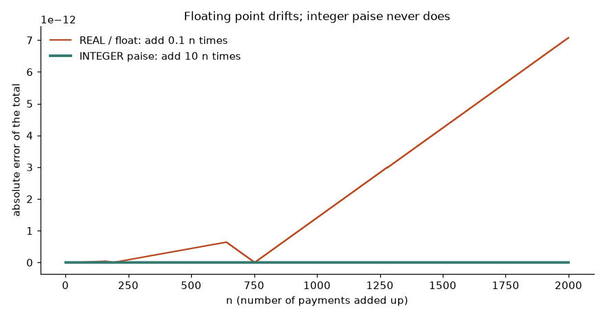
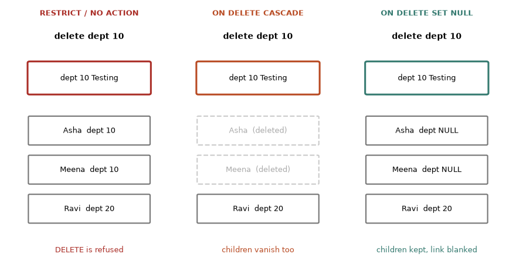
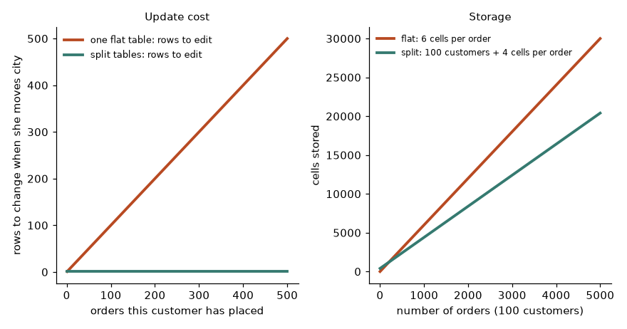
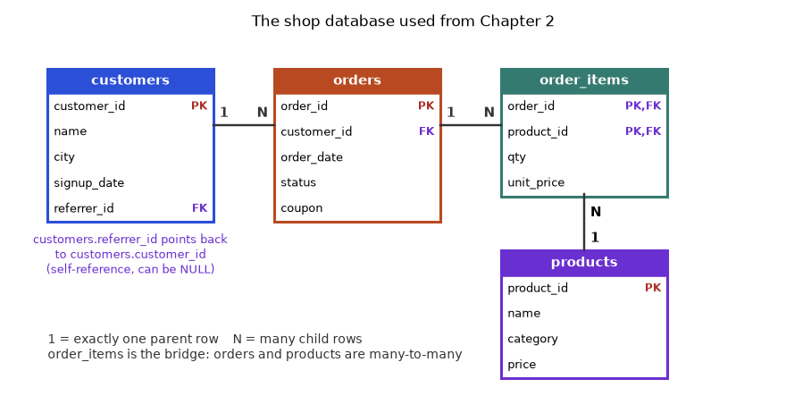
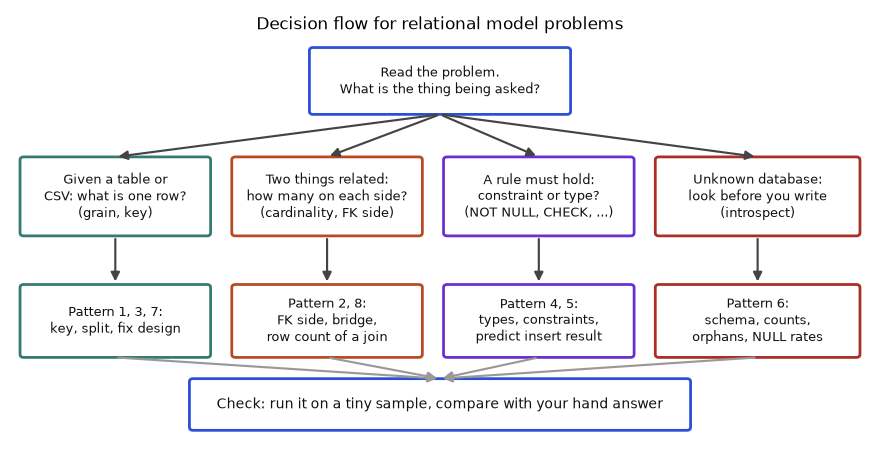
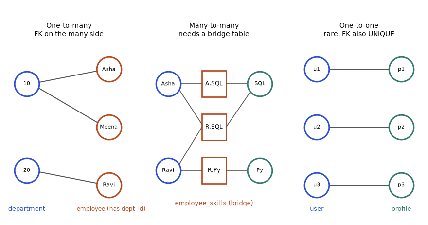
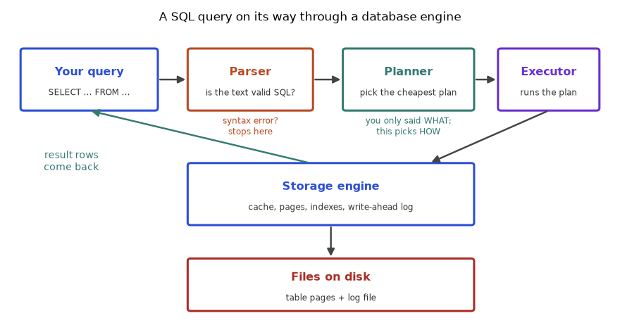
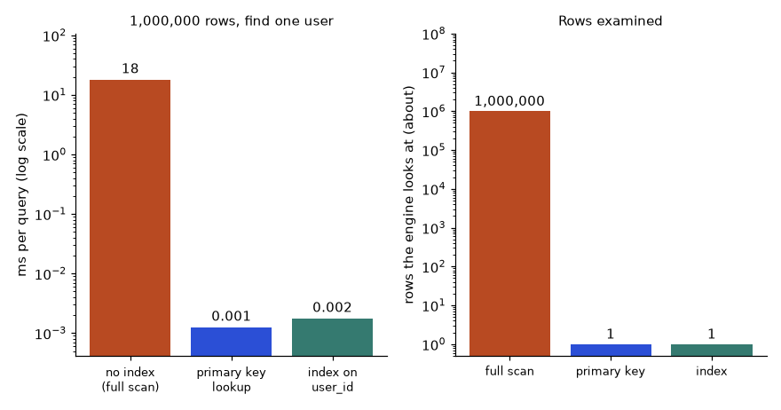

Think about the last app you used to order food. Somewhere, a program stored your name, your address, your order and the restaurant's menu, and it found them again in a fraction of a second while thousands of other people did the same. That program is a database. Almost every job in data, analytics, machine learning and software depends on reading from one. In this chapter you learn what a database is, how a relational database organises data in tables linked by keys, and how to install two free ones (SQLite and PostgreSQL) so that you can practise on your own laptop from today.
This chapter uses a handful of words over and over. Read this table once now. If a word later feels fuzzy, come back here. Nothing in the table needs any earlier knowledge.
| Word | Plain-English meaning | Everyday picture |
|---|---|---|
| Data | Facts written down: a name, a price, a date. | One cell in a spreadsheet. |
| Database | An organised collection of data that a program looks after for you. | A well-run filing room. |
| DBMS | The program that looks after the database (PostgreSQL, SQLite, MySQL). | The clerk who runs the filing room. |
| Table | One list of similar things, laid out as rows and columns. | One drawer: "customers". |
| Row | One thing in the list (one customer). | One card in the drawer. |
| Column | One property that every row has (the city). | One printed field on every card. |
| Key | A value that picks out exactly one row. | A passport number. |
| Query | A written question you send to the database. | A note to the clerk: "bring me all cards where city is Pune". |
| Constraint | A rule the database enforces on every change. | The clerk refuses a card with no name on it. |
| Transaction | A group of changes that either all happen or none happen. | A bank transfer: money leaves one account and arrives in the other, or nothing moves. |
A relational database stores data in tables. You talk to it with SQL (Structured Query Language, said "S-Q-L" or "sequel"). SQL is declarative: you say what you want, not how to get it. The database engine decides the how. This is the most important mental shift for a programmer.
Compare a Python loop and a SQL query for "total of all paid orders":
orders = [{"status": "paid", "amount": 500}, {"status": "cancelled", "amount": 300}]
total = 0
for order in orders:
if order["status"] == "paid":
total += order["amount"]SELECT SUM(amount) FROM orders WHERE status = 'paid';The Python tells the computer every step. The SQL states the result. The engine may use an index, run in parallel, or read from cache. You do not care.
| Idea | Example | Where it appears in the job |
|---|---|---|
| Table | orders | a fact table in a warehouse |
| Row | one order | one event in an event log |
| Column | order_date | a feature column for ML |
| SQL query | SELECT ... WHERE ... | a dashboard tile, a data-pull for a model |
| Need | CSV file | Database |
|---|---|---|
| Fast search | Read whole file | Indexes (Chapter 10) |
| Many users at once | Corruption risk | Transactions and locks (Chapter 9) |
| Rules on data | None | Constraints (Chapter 9) |
| Crash safety | Half-written file | Write-ahead log, recovery |
| Joining two datasets | Manual code | JOIN (Chapter 4) |
You / Python / BI tool
| SQL text
v
+-------------------+
| Parser | checks the syntax
| Planner/Optimizer | chooses the fastest plan
| Executor | runs the plan
| Storage engine | pages on disk, cache, log
+-------------------+
|
files on diskProblem 1.1.1 A delivery app produces 5 million delivery-tracking rows per day. After 30 days, how many rows must the database hold, and why is a plain file a poor choice?
| Step 1 | Multiply: 5,000,000 × 30 = 150,000,000 rows. |
|---|---|
| Step 2 | A file must be read from the start to find the rows of one day. 150 million rows at, say, 100 bytes each is about 15 GB to scan. |
| Step 3 | A database index finds the rows for one day without reading the other 15 GB. |
| Check | 150,000,000 × 100 bytes = 15,000,000,000 bytes = 15 GB, using 1 GB = 1,000,000,000 bytes. |
| Answer | 150 million rows (about 15 GB at 100 bytes per row). A database with an index avoids scanning all of it. |
| Meaning | Reading 15 GB takes tens of seconds even on a fast disk. Doing that for every question is too slow, which is why databases keep indexes. |
Problem 1.1.2 Is SELECT * FROM orders WHERE status = 'paid' imperative or declarative? What does the engine decide?
| Step 1 | The query says which rows (status = 'paid') and which columns (*), but no loop and no order of steps. |
|---|---|
| Step 2 | So it is declarative. |
| Answer | Declarative. The engine decides whether to scan the table, use an index, and how to read the pages. |
| Check | Ask: "Did I write a loop or an order of steps?" No, so it is declarative. |
Every analyst, data engineer and ML engineer reads data from a database daily. Feature tables for ML, dashboards for managers and the order history of every online shop all live in databases. SQL is the one skill that appears in almost every data job description.
Check yourself
Answer: You describe the result you want; the engine chooses the steps.
Answer: For example indexes, transactions, constraints, crash recovery.
Answer: Database Management System.
departments employees
+---------+-----------+ +--------+-------+---------+--------+
| dept_id | dept_name | | emp_id | name | dept_id | salary |
+---------+-----------+ +--------+-------+---------+--------+
| 10 | Testing |<----------| 1 | Asha | 10 | 90000 |
| 20 | Data |<----------| 2 | Ravi | 20 | 120000 |
+---------+-----------+ \----| 3 | Meena | 10 | 95000 |
PK = dept_id +--------+-------+---------+--------+
PK = emp_id, FK = dept_id| Concept | Example value | Where it appears in the job |
|---|---|---|
| Primary key | emp_id = 1 | user_id that identifies a user in every table |
| Foreign key | employees.dept_id = 10 | orders.customer_id linking to a customer |
| Grain | one row = one employee | the first question to ask about any dataset |
| NULL | no manager assigned | missing values you must handle in ML |
Before you run each example, predict: will it succeed or fail? Then compare with the real output.
We create two tables, insert rows, and read them back. The sqlite3 tool shows output with a header row.
Problem 1.2.1 Create departments and employees, insert data, and list all employees.
| Step 1 | Create the parent table first (the one that is referred to). |
|---|---|
| Step 2 | Create the child table with a foreign key. |
| Step 3 | Insert rows and SELECT. |
PRAGMA foreign_keys = ON; -- SQLite only: FK checks are off by default
CREATE TABLE departments (
dept_id INTEGER PRIMARY KEY,
dept_name TEXT NOT NULL UNIQUE
);
CREATE TABLE employees (
emp_id INTEGER PRIMARY KEY,
name TEXT NOT NULL,
dept_id INTEGER REFERENCES departments(dept_id),
salary INTEGER
);
INSERT INTO departments VALUES (10,'Testing'),(20,'Data');
INSERT INTO employees VALUES
(1,'Asha',10,90000),
(2,'Ravi',20,120000),
(3,'Meena',10,95000);
SELECT * FROM employees;emp_id name dept_id salary
------ ----- ------- ------
1 Asha 10 90000
2 Ravi 20 120000
3 Meena 10 95000Problem 1.2.2 What happens if we insert a second employee with emp_id = 1, or an employee in department 99 (which does not exist)?
| Step 1 | The primary key rejects duplicates. |
|---|---|
| Step 2 | The foreign key rejects a parent that does not exist. |
PRAGMA foreign_keys = ON;
INSERT INTO employees VALUES (1,'Dup',10,50000);
INSERT INTO employees VALUES (4,'Ghost',99,50000);Runtime error near line 3: UNIQUE constraint failed: employees.emp_id (19)
Runtime error near line 4: FOREIGN KEY constraint failed (19)UNIQUE constraint failed: employees.emp_id for the duplicate key and FOREIGN KEY constraint failed for the missing department. (SQLite says UNIQUE for primary keys; PostgreSQL says duplicate key value violates unique constraint.)SELECT COUNT(*) FROM employees; afterwards: still 3.Common types: INTEGER, NUMERIC(p,s) / DECIMAL (exact decimals, use for money), REAL/DOUBLE (approximate, do not use for money), TEXT/VARCHAR, BOOLEAN, DATE, TIMESTAMP. SQLite is unusual: it has type affinity, so it is lenient and stores almost anything in any column. PostgreSQL is strict. Learn the strict rules; they are what you will meet at work.
Keys are how you join tables (Chapter 4). A wrong key assumption is the number one cause of wrong dashboard numbers. Before using any table, ask: "What is one row? What is its primary key?" This is called the table's grain.
user_id for MLemail or name as primary key. Names repeat and emails change. Use a surrogate key plus a UNIQUE constraint on the natural value.Check yourself
Answer: No. It must be unique and not NULL.
Answer: It forces a value to exist as a primary key in another table.
Answer: What one row represents.
SQLite is a database in a single file. It has no server. macOS already includes the sqlite3 command. Check the version. Window functions need version 3.25 or newer, and RIGHT/FULL JOIN need 3.39 or newer.
sqlite3 --version
sqlite3 shop.db # opens (or creates) the file shop.dbUseful commands inside the shell (they start with a dot, they are not SQL):
| Command | Meaning |
|---|---|
.tables | list tables |
.schema orders | show the CREATE statement |
.headers on and .mode column | readable output |
.read file.sql | run a SQL file |
.import file.csv table | load a CSV |
.timer on | show query time |
.quit | leave |
Let us use a few of them. In this book each chapter runs on a fresh file database, so the output below is real.
SELECT sqlite_version() AS version;
.tables
.schema employeesversion
-------
3.51.0
departments employees
CREATE TABLE employees (
emp_id INTEGER PRIMARY KEY,
name TEXT NOT NULL,
dept_id INTEGER REFERENCES departments(dept_id),
salary INTEGER
);PostgreSQL ("Postgres") is a server. The easy free ways to run it:
# Option A: Docker (works on any OS)
docker run --name pg -e POSTGRES_PASSWORD=devpass -p 5432:5432 -d postgres
docker exec -it pg psql -U postgres
# Option B: macOS with Homebrew
brew install postgresql
brew services start postgresql
psql postgresNot run here: this book was tested with SQLite, so PostgreSQL commands are shown in standard form. The password above is a throw-away example for a local test container. Never reuse such a password.
Useful psql commands: \l (list databases), \dt (list tables), \d tablename (describe), \i file.sql (run a file), \copy (load a CSV), \timing (time queries), \q (quit).
Graphical clients (free): DBeaver, pgAdmin, DB Browser for SQLite, and VS Code extensions.
| Topic | SQLite | PostgreSQL |
|---|---|---|
| Architecture | Library, one file | Client-server |
| Types | Flexible | Strict |
| Many writers | One at a time | Many (MVCC) |
| Rich features | Fewer (no ROLLUP, LATERAL, DATE_TRUNC) | Very rich |
| Best use | Learning, apps, tests | Production |
Problem 1.3.1 Load a CSV of delivery times into SQLite. Create deliveries.csv with the rows Pune,230, Delhi,410, Mumbai,980 (city, minutes).
| Step 1 | Create the file with printf. |
|---|---|
| Step 2 | Create a table, then import. .import is a dot-command. |
| Step 3 | Query to confirm. |
printf 'Pune,230\nDelhi,410\nMumbai,980\n' > /tmp/deliveries.csvCREATE TABLE deliveries (city TEXT, minutes INTEGER);
.mode csv
.import /tmp/deliveries.csv deliveries
.mode column
SELECT city, minutes FROM deliveries ORDER BY minutes DESC;city minutes
------ -------
Mumbai 980
Delhi 410
Pune 230 Problem 1.3.2 Find out how many rows are in a table without opening a GUI.
SELECT COUNT(*) AS n_employees FROM employees;n_employees
-----------
3SELECT COUNT(*).You will use a server database (Postgres, MySQL, SQL Server, a cloud warehouse) at work and SQLite or DuckDB on your laptop for quick analysis. All speak almost the same SQL for the first 90 percent of tasks.
PRAGMA foreign_keys = ON; in SQLite. Without it foreign keys are silently ignored. PostgreSQL always enforces them.Check yourself
Answer: 3.25.
Answer: PostgreSQL.
\dt do in psql?Answer: Lists the tables.
customers, and let each order point to the customer by key. This is "one fact in one place".order_items is the bridge. customers 1 ----< orders 1 ----< order_items >---- 1 products
(PK customer_id) (FK customer_id) (FK order_id, FK product_id)| Relationship | Example | Where it appears in the job |
|---|---|---|
| One-to-many | one customer, many orders | user and events tables |
| Many-to-many | orders and products via order_items | students and courses, tags and articles |
| One-to-one | user and user_profile | splitting rarely used columns |
From Chapter 2 onward we use the same small shop database, so you can compare chapters easily. It has 8 customers, 6 products, 14 orders and 20 order lines. Customers 7 and 8 have never ordered. Product 6 (Mug) never sold. Those gaps are deliberate: they make joins and anti-joins interesting.
Problem 1.4.1 An employees table also needs "skills" (an employee has many skills, a skill belongs to many employees). Design the tables.
| Step 1 | Skills and employees are many-to-many, so we need a bridge table. |
|---|---|
| Step 2 | The bridge has two FKs and a composite primary key. |
PRAGMA foreign_keys = ON;
CREATE TABLE skills (skill_id INTEGER PRIMARY KEY, skill TEXT NOT NULL UNIQUE);
CREATE TABLE employee_skills (
emp_id INTEGER REFERENCES employees(emp_id),
skill_id INTEGER REFERENCES skills(skill_id),
PRIMARY KEY (emp_id, skill_id)
);
INSERT INTO skills VALUES (1,'Excel'),(2,'SQL'),(3,'Python');
INSERT INTO employee_skills VALUES (1,1),(1,2),(2,2),(2,3),(3,1);
SELECT e.name, s.skill
FROM employees e
JOIN employee_skills es ON es.emp_id = e.emp_id
JOIN skills s ON s.skill_id = es.skill_id
ORDER BY e.name, s.skill;name skill
----- ------
Asha Excel
Asha SQL
Meena Excel
Ravi Python
Ravi SQLJOIN for now as "attach the matching rows".)Problem 1.4.2 How many rows does the bridge table need for 1,000 employees who each know 4 skills?
| Step 1 | One row per pair: 1,000 × 4 = 4,000. |
|---|---|
| Answer | 4,000 rows. Storing skills as a comma list inside employees would break search and rules. |
| Meaning | 4,000 small rows are cheap and fast to search. One long text cell per person is not. |
Reading an unfamiliar database starts with drawing this picture: which tables are parents, which are children, which are bridges. Data engineers call it "understanding the data model".
Check yourself
Answer: The "many" side.
Answer: A bridge table.
Answer: One fact in one place, so one update fixes it.
NOT NULL, UNIQUE, CHECK or PRIMARY KEY is a rule that the database enforces to reject invalid data.| Rule | What it forbids | Example | Typical job use |
|---|---|---|---|
NOT NULL | A missing value | name TEXT NOT NULL | Mandatory fields such as an order date |
UNIQUE | Two rows with the same value | sku TEXT UNIQUE | Natural keys: email, SKU, passport number |
PRIMARY KEY | Duplicates and NULL (UNIQUE plus NOT NULL, one per table) | product_id INTEGER PRIMARY KEY | Identifying a row in every join |
FOREIGN KEY | A value with no parent row | REFERENCES departments(dept_id) | No orphan orders |
CHECK (condition) | Any row where the condition is false | CHECK (price > 0) | Ranges, allowed status values |
DEFAULT value | Nothing; it fills in a value when you omit the column | category TEXT DEFAULT 'General' | Created-at timestamps, status flags |
Four of these (NOT NULL, UNIQUE, CHECK, FOREIGN KEY) are rules that reject rows. DEFAULT is a convenience. PRIMARY KEY is shorthand for two rules at once. Learn to see every table definition as a list of promises about its data.
Problem 1.5.1 Build a products table with a mandatory name, a unique SKU, a positive price and a default category. Send it one good row and four bad rows. Predict each result before you read the output.
| Step 1 | Write the table so that each promise has its own rule: NOT NULL on name and price, UNIQUE on sku, CHECK (price > 0), DEFAULT 'General'. |
|---|---|
| Step 2 | Put the test statements in a list with a label, so every outcome is printed. |
| Step 3 | Wrap each insert in try/except sqlite3.Error so one failure does not stop the script. |
| Step 4 | Predict: the good row passes; missing name fails (NOT NULL); duplicate sku fails (UNIQUE); price 0 fails (CHECK); duplicate id fails (PRIMARY KEY). |
import sqlite3
con = sqlite3.connect(":memory:")
con.execute("""
CREATE TABLE products (
product_id INTEGER PRIMARY KEY,
name TEXT NOT NULL,
sku TEXT UNIQUE,
price INTEGER NOT NULL CHECK (price > 0),
category TEXT NOT NULL DEFAULT 'General'
)""")
tests = [
("good row", "INSERT INTO products(product_id,name,sku,price) VALUES (1,'Keyboard','KB-1',1500)"),
("missing name", "INSERT INTO products(product_id,sku,price) VALUES (2,'MS-1',600)"),
("duplicate sku","INSERT INTO products(product_id,name,sku,price) VALUES (3,'Mouse','KB-1',600)"),
("price zero", "INSERT INTO products(product_id,name,sku,price) VALUES (4,'Free','F-1',0)"),
("duplicate id", "INSERT INTO products(product_id,name,sku,price) VALUES (1,'Pen','P-1',20)"),
]
for label, sql in tests:
try:
con.execute(sql)
print(f"{label:14} OK")
except sqlite3.Error as e:
print(f"{label:14} REJECTED: {e}")
print(con.execute("SELECT * FROM products").fetchall())good row OK
missing name REJECTED: NOT NULL constraint failed: products.name
duplicate sku REJECTED: UNIQUE constraint failed: products.sku
price zero REJECTED: CHECK constraint failed: price > 0
duplicate id REJECTED: UNIQUE constraint failed: products.product_id
[(1, 'Keyboard', 'KB-1', 1500, 'General')]sqlite3.connect(":memory:") makes a throw-away database that lives in RAM and disappears when the script ends.CREATE TABLE text is one multi-line string. product_id INTEGER PRIMARY KEY is the identity of each row. name TEXT NOT NULL forbids a missing name. sku TEXT UNIQUE forbids a repeated SKU but allows NULL. CHECK (price > 0) is evaluated for every inserted or updated row. DEFAULT 'General' supplies the category when the insert does not mention it.tests is a list of (label, SQL) pairs. Notice that the second test leaves out name entirely, so name would be NULL.except sqlite3.Error as e catches it and prints the database's own message. {label:14} pads the label to 14 characters so the output lines up.category is the default 'General'.| Answer | Exactly one row survives. All four bad rows are refused, each by a different rule. |
|---|---|
| Check | The table holds one row, and its category shows the DEFAULT worked even though the insert never mentioned it. |
| Meaning | You never wrote an if statement. The table definition is the validation code, and it runs for every program that touches the table. PostgreSQL phrases the messages differently (for example null value in column "name" violates not-null constraint) but refuses the same rows. |
Problem 1.5.2 A table has qty INTEGER CHECK (qty > 0). Does the row with qty = NULL get in? Then fix the table so it does not.
| Idea | A CHECK rejects a row only when the condition is false. With NULL the condition NULL > 0 is neither true nor false but unknown (three-valued logic, Chapter 2). Unknown is not false, so the row passes. |
|---|---|
| Fix | Add NOT NULL next to the CHECK. The two rules cover different cases: CHECK covers bad numbers, NOT NULL covers absent numbers. |
import sqlite3
con = sqlite3.connect(":memory:")
con.execute("CREATE TABLE lines_a (qty INTEGER CHECK (qty > 0))")
con.execute("CREATE TABLE lines_b (qty INTEGER NOT NULL CHECK (qty > 0))")
for t in ("lines_a", "lines_b"):
for value in (5, 0, None):
try:
con.execute(f"INSERT INTO {t} VALUES (?)", (value,))
print(t, value, "accepted")
except sqlite3.Error as e:
print(t, value, "rejected:", e)lines_a 5 accepted
lines_a 0 rejected: CHECK constraint failed: qty > 0
lines_a None accepted
lines_b 5 accepted
lines_b 0 rejected: CHECK constraint failed: qty > 0
lines_b None rejected: NOT NULL constraint failed: lines_b.qtyNOT NULL. lines_a has only a CHECK.None, which Python sends to SQL as NULL.? is a placeholder: the value travels separately from the SQL text. Section 1.10 explains why this matters for safety. The table name in the f-string comes from our own constant list, never from a user.| Answer | In lines_a the NULL is accepted. In lines_b it is rejected by NOT NULL. The value 0 is rejected in both. |
|---|---|
| Meaning | A NULL slips past a CHECK in every major database. Always pair a CHECK on a column with NOT NULL when the value is mandatory. |
CHECK (price > 0) also forces a price to exist. Wrong: NULL > 0 is unknown, and a CHECK only rejects false. Right: price INTEGER NOT NULL CHECK (price > 0).Problem 1.5.3 Why is a float column dangerous for money? Add up ten payments of 0.10 and compare with 1.00. Then store the same payments as whole paise.
| Idea | Computers store REAL / FLOAT numbers in binary. The decimal 0.1 has no exact binary form, just as 1/3 has no exact decimal form. Small errors appear, and they grow when you add many numbers. |
|---|---|
| Plan | Show the error in plain Python and inside SQLite. Then show two safe options: exact decimals (NUMERIC, Python Decimal) and integers counting the smallest unit (paise or cents). |
import sqlite3
from decimal import Decimal
print(0.1 + 0.2, 0.1 + 0.2 == 0.3)
total = 0.0
for _ in range(10):
total += 0.1
print(total, total == 1.0)
con = sqlite3.connect(":memory:")
print(con.execute("SELECT 0.1 + 0.2 = 0.3, 10 + 20 = 30").fetchone())
print(Decimal("0.1") + Decimal("0.2"))
paise = [10] * 10
print(sum(paise), sum(paise) / 100)0.30000000000000004 False
0.9999999999999999 False
(0, 1)
0.3
100 1.00.1 + 0.2 = 0.3 is 0 (false) in SQL too, while the integer version is 1 (true).Decimal works in base 10 and is exact. In PostgreSQL the same idea is NUMERIC(12,2).
How to read it: the horizontal axis counts how many payments were added. The vertical axis is how far the computed total is from the true total. The float error is small, which is why the bug survives testing, but equality checks such as total = 1.00 and reconciliation reports that must match to the paisa fail at random. The integer line is flat at zero.
| Answer | Floats give 0.30000000000000004 and 0.9999999999999999; exact types give 0.3 and 100 paise. |
|---|---|
| Meaning | Use NUMERIC(p,s) or integer paise for money, never REAL or FLOAT. Floats are fine for measurements such as temperature or a model score. |
FLOAT and filtering WHERE total = 19.99. The stored value may be 19.989999999999998 and the row never matches. Store integer paise (1999), or NUMERIC(10,2).Problem 1.5.4 You declare n INTEGER in SQLite and insert the text 'abc'. What happens? How does PostgreSQL behave, and how do you make SQLite strict?
| Idea | SQLite columns have a type affinity (a preference), not a hard type. It tries to convert the value to the preferred type and, if it cannot, stores the value as it is. typeof() reveals what was really stored. |
|---|---|
| Fix | Create the table with the STRICT keyword (SQLite 3.37 or newer). Then the declared type is enforced, as in PostgreSQL. |
import sqlite3
con = sqlite3.connect(":memory:")
con.execute("CREATE TABLE loose (n INTEGER)")
con.execute("INSERT INTO loose VALUES ('42'), ('abc'), (3.0), (3.5)")
print(con.execute("SELECT n, typeof(n) FROM loose").fetchall())
con.execute("CREATE TABLE tight (n INTEGER) STRICT")
try:
con.execute("INSERT INTO tight VALUES ('abc')")
except sqlite3.Error as e:
print("STRICT says:", e)[(42, 'integer'), ('abc', 'text'), (3, 'integer'), (3.5, 'real')]
STRICT says: cannot store TEXT value in INTEGER column tight.ntypeof(n) reports the storage class of each stored value. Text that looks like an integer is converted (42 becomes an integer), 3.0 is converted to the integer 3 because it loses nothing, 3.5 stays real, and 'abc' stays text inside an INTEGER column.STRICT, so inserting 'abc' is refused with a datatype error.| Answer | Plain SQLite accepts 'abc' into an INTEGER column. PostgreSQL would refuse it (invalid input syntax for type integer). A STRICT SQLite table refuses it too. |
|---|---|
| Meaning | Practice on SQLite but think in the strict rules of PostgreSQL. A query that works on sloppy data in SQLite may fail on a real server, or worse, may sum text as zero. |
| You want to store | PostgreSQL type | SQLite practice | Warning |
|---|---|---|---|
| Whole numbers, ids, counts | INTEGER, BIGINT | INTEGER | Use BIGINT if you may pass 2.1 billion rows |
| Money | NUMERIC(12,2) | integer paise | Never float |
| Measurements, scores | DOUBLE PRECISION | REAL | Approximate |
| Names, descriptions | TEXT or VARCHAR(n) | TEXT | Length limits are optional in PostgreSQL |
| Yes or no | BOOLEAN | INTEGER 0 or 1 | SQLite stores true as 1 |
| Calendar day | DATE | text '2024-01-05' | ISO format sorts correctly as text |
| Moment in time | TIMESTAMPTZ | text or integer | Store UTC, convert at display |
A data engineer's first defence against bad dashboards is a table that cannot hold bad rows. When you inherit a table full of impossible values (negative ages, orders from the year 1900), the usual root cause is a missing constraint. When you design a new table, write the constraints on day one: adding them later means cleaning every bad row first.
CHECK (status IN ('paid','refunded','cancelled'))created_at DEFAULT CURRENT_TIMESTAMPCheck yourself
Answer: NOT NULL.
CHECK (age >= 0) and no NOT NULL. Can a row have a NULL age?Answer: Yes. The check is unknown for NULL, and unknown passes.
Answer: NUMERIC(12,2), or integer paise. Never REAL.
ON DELETE rules say what happens to related rows when a row is deleted.| Kind | Definition | Good for | Watch out |
|---|---|---|---|
| Natural key | A real-world value that is unique (passport number, ISBN, country code) | Small stable reference lists | Values change (emails) or turn out not to be unique (names) |
| Surrogate key | A meaningless number the database hands out (1, 2, 3) | Almost every business table | Add a UNIQUE on the natural value too, or duplicates creep in |
| Composite key | Two or more columns that are unique together | Bridge tables such as order_items(order_id, product_id) | Every child that references it must carry all the columns |
| Candidate key | Any column set that could serve as the key | Choosing the primary key | You pick one as primary; the rest get UNIQUE |
Problem 1.6.1 What id does the next row get after you delete the row with the highest id? Compare INTEGER PRIMARY KEY with INTEGER PRIMARY KEY AUTOINCREMENT.
| Step 1 | In SQLite an INTEGER PRIMARY KEY column is an alias for the internal row number (rowid). A new row gets the current maximum plus one. |
|---|---|
| Step 2 | So if you delete the maximum, the next insert reuses that number. |
| Step 3 | AUTOINCREMENT keeps a counter that never goes down, so the number is never reused. |
| Predict | Table a (plain): ids 1,2,3, delete 3, insert, expect 3. Table b (AUTOINCREMENT): expect 4. |
import sqlite3
con = sqlite3.connect(":memory:")
con.execute("CREATE TABLE a (id INTEGER PRIMARY KEY, v TEXT)")
con.execute("CREATE TABLE b (id INTEGER PRIMARY KEY AUTOINCREMENT, v TEXT)")
for t in ("a", "b"):
for v in ("x", "y", "z"):
con.execute(f"INSERT INTO {t}(v) VALUES (?)", (v,))
con.execute(f"DELETE FROM {t} WHERE id = 3")
cur = con.execute(f"INSERT INTO {t}(v) VALUES ('new')")
print(t, "new row got id", cur.lastrowid)a new row got id 3
b new row got id 4a uses the plain form, table b the AUTOINCREMENT form.DELETE removes the row with the highest id, 3.cur.lastrowid is the id the database assigned to the row we just inserted.| Answer | Table a reuses 3. Table b gives 4. |
|---|---|
| Meaning | If another system saved "order 3" in a log, a reused id can attach that log to the wrong row. PostgreSQL identity columns and sequences (GENERATED ALWAYS AS IDENTITY) never reuse a number, even after deletes or rolled-back inserts, though they can leave gaps. Never assume ids are consecutive. |
Problem 1.6.2 Students enrol in courses. A student can take many courses and a course has many students, but a student may enrol in the same course only once. Design the key and test it.
| Step 1 | Many-to-many, so a bridge table enrolments. |
|---|---|
| Step 2 | One row is one (student, course) pair. The pair is what must be unique, so the primary key is the composite (student_id, course_id). |
| Step 3 | Each part is also a foreign key to its parent table. |
| Step 4 | Test: the same pair twice must fail; the same student with a different course must pass. |
import sqlite3
con = sqlite3.connect(":memory:")
con.execute("PRAGMA foreign_keys = ON")
con.executescript("""
CREATE TABLE students (student_id INTEGER PRIMARY KEY, name TEXT NOT NULL);
CREATE TABLE courses (course_id INTEGER PRIMARY KEY, title TEXT NOT NULL);
CREATE TABLE enrolments (
student_id INTEGER NOT NULL REFERENCES students(student_id),
course_id INTEGER NOT NULL REFERENCES courses(course_id),
grade INTEGER,
PRIMARY KEY (student_id, course_id)
);
INSERT INTO students VALUES (1,'Asha'),(2,'Ravi');
INSERT INTO courses VALUES (10,'SQL'),(20,'Python');
""")
attempts = [(1,10), (1,20), (1,10), (2,10), (3,10)]
for s, c in attempts:
try:
con.execute("INSERT INTO enrolments(student_id, course_id) VALUES (?,?)", (s, c))
print((s, c), "enrolled")
except sqlite3.Error as e:
print((s, c), "refused:", e)(1, 10) enrolled
(1, 20) enrolled
(1, 10) refused: UNIQUE constraint failed: enrolments.student_id, enrolments.course_id
(2, 10) enrolled
(3, 10) refused: FOREIGN KEY constraint failedPRAGMA foreign_keys = ON must run on every new SQLite connection, or the REFERENCES rules are silently ignored.PRIMARY KEY (student_id, course_id) after the column list declares the composite key. The two columns together must be unique; either may repeat on its own.| Answer | Attempts 1, 2 and 4 pass. Attempt 3 fails the composite key. Attempt 5 fails the foreign key. |
|---|---|
| Check | Three rows are stored. Student 1 appears twice and course 10 appears twice, which proves each column alone is not unique, only the pair is. |
Problem 1.6.3 You delete department 10, which still has employees. What can the database do? Test the three common foreign-key actions.
| Idea | When a parent row is deleted, the foreign key ON DELETE action decides the fate of the child rows. Default (NO ACTION / RESTRICT): refuse the delete. CASCADE: delete the children too. SET NULL: keep the children, blank the link. |
|---|---|
| Plan | Build the same two tables three times, once per action, delete department 10, and list the employees that remain. |
import sqlite3
def trial(action):
con = sqlite3.connect(":memory:")
con.execute("PRAGMA foreign_keys = ON")
con.executescript(f"""
CREATE TABLE departments (dept_id INTEGER PRIMARY KEY, dept_name TEXT);
CREATE TABLE employees (
emp_id INTEGER PRIMARY KEY, name TEXT,
dept_id INTEGER REFERENCES departments(dept_id) {action});
INSERT INTO departments VALUES (10,'Testing'),(20,'Data');
INSERT INTO employees VALUES (1,'Asha',10),(2,'Meena',10),(3,'Ravi',20);
""")
try:
con.execute("DELETE FROM departments WHERE dept_id = 10")
result = "delete ok"
except sqlite3.Error as e:
result = "delete refused: " + str(e)
rows = con.execute("SELECT name, dept_id FROM employees ORDER BY emp_id").fetchall()
return result, rows
for action in ("", "ON DELETE CASCADE", "ON DELETE SET NULL"):
print(repr(action or "default"), trial(action))'default' ('delete refused: FOREIGN KEY constraint failed', [('Asha', 10), ('Meena', 10), ('Ravi', 20)])
'ON DELETE CASCADE' ('delete ok', [('Ravi', 20)])
'ON DELETE SET NULL' ('delete ok', [('Asha', None), ('Meena', None), ('Ravi', 20)])trial(action) builds a fresh database so the three experiments cannot affect each other. The {action} text is pasted into the foreign key definition.try because the default action raises an error.
How to read it: each column starts with the same department row on top and three employees below. Under RESTRICT nothing changes because the delete is refused. Under CASCADE Asha and Meena are removed together with their department. Under SET NULL both stay but their dept_id becomes NULL, so they are now unassigned.
| Answer | Default refuses and keeps all 3 employees. CASCADE leaves only Ravi. SET NULL leaves 3 employees, two with a NULL department. |
|---|---|
| Meaning | Choose by business meaning. Cascade suits true parts (order lines die with their order). Restrict suits things you must not lose silently (a customer with orders). SET NULL suits optional links (an employee between departments). |
ON DELETE CASCADE on a link to a big shared table "to make deletes work". One careless DELETE on a customer then silently erases years of orders and payments. Prefer the default refusal for business history and delete deliberately, child first.Problem 1.6.4 Employees have a manager who is also an employee. Where does the foreign key point, and how does the boss of everyone fit in?
| Idea | A table can reference itself. manager_id holds the emp_id of another row of the same table. The top person has nobody above, so that cell is NULL, which is exactly why a foreign key column is allowed to be NULL. |
|---|---|
| Query | To show each employee beside the manager's name we use the table twice under two aliases (e and m) and attach the manager row with a LEFT JOIN. Read it as "for each employee, add the manager's row if there is one; leave blanks if not". Chapter 4 teaches joins fully. |
import sqlite3
con = sqlite3.connect(":memory:")
con.execute("PRAGMA foreign_keys = ON")
con.executescript("""
CREATE TABLE employees (
emp_id INTEGER PRIMARY KEY,
name TEXT NOT NULL,
manager_id INTEGER REFERENCES employees(emp_id)
);
INSERT INTO employees VALUES (1,'Kavya',NULL),(2,'Asha',1),(3,'Ravi',1),(4,'Meena',2);
""")
q = """SELECT e.name, m.name AS manager
FROM employees e LEFT JOIN employees m ON m.emp_id = e.manager_id
ORDER BY e.emp_id"""
for row in con.execute(q):
print(row)('Kavya', None)
('Asha', 'Kavya')
('Ravi', 'Kavya')
('Meena', 'Asha')REFERENCES employees(emp_id) sits inside the employees table itself. The row must exist before another row points to it, which is why Kavya (manager NULL) is inserted first.e plays the employee and m plays that employee's manager. The condition m.emp_id = e.manager_id connects them.LEFT JOIN keeps Kavya even though no manager row matches her NULL. An ordinary JOIN would silently drop her.| Answer | Four rows: Kavya has manager None (NULL), Asha and Ravi report to Kavya, Meena reports to Asha. |
|---|---|
| Meaning | Org charts, category trees and comment threads are all self-references. Walking several levels needs a recursive query (Chapter 5). |
Problem 1.6.5 You receive a table and a colleague says "order_id is the key". Prove or disprove it with a query, then find the real key.
| Idea | A column set is a valid key only if the number of rows equals the number of distinct values of that set. Two counts settle it. |
|---|---|
| Step 1 | Compare COUNT(*) with COUNT(DISTINCT order_id). |
| Step 2 | If they differ, try the pair: count distinct (order_id, product_id) combinations. |
import sqlite3
con = sqlite3.connect(":memory:")
con.executescript("""
CREATE TABLE order_items (order_id INT, product_id INT, qty INT);
INSERT INTO order_items VALUES (101,1,1),(101,3,2),(102,2,1),(103,5,1),(103,4,1),(104,3,5);
""")
print(con.execute("SELECT COUNT(*), COUNT(DISTINCT order_id) FROM order_items").fetchone())
print(con.execute("""SELECT COUNT(*) FROM
(SELECT DISTINCT order_id, product_id FROM order_items)""").fetchone())(6, 4)
(6,)order_id is not a key: order 101 appears twice.SELECT DISTINCT keeps one copy of each (order_id, product_id) pair, and the outer query counts them. 6 pairs for 6 rows means the pair is unique.| Answer | Not order_id alone. The composite (order_id, product_id) is unique on this data. |
|---|---|
| Caution | Passing on today's data does not prove a rule. It only proves nothing currently contradicts it. Decide the key from what a row means (one product on one order) and then enforce it with PRIMARY KEY. |
COUNT(*) versus COUNT(DISTINCT key)) before trusting a key.In a warehouse nobody hands you a diagram. You inherit tables called fct_orders or dim_user and must work out the keys yourself. The two-count check, the composite key test and the question "what does one row mean?" are used on day one of every project. Foreign key actions matter when you design deletion rules for personal data requests (a user asks to be forgotten and their rows in six tables must go in the right order).
customer_id plus UNIQUE(email) in user tablesCheck yourself
(order_id, product_id) identify an order line but order_id alone does not?Answer: An order has many lines, so order_id repeats. One product appears once per order, so the pair is unique.
ON DELETE SET NULL do?Answer: When the parent is deleted, child rows stay and their foreign key column becomes NULL.
Answer: The top row of the hierarchy has no parent. NULL means "no parent".
| Theory word | SQL word | Spreadsheet word | Precise meaning |
|---|---|---|---|
| Relation | Table | Sheet | A set of tuples that share the same attributes |
| Tuple | Row | Row | One combination of values, one per attribute |
| Attribute | Column | Column | A named property with a domain (its allowed values) |
| Domain | Data type + CHECK | Validation rule | The set of legal values for an attribute |
| Degree / cardinality | Number of columns / rows | Width / height | Do not confuse with the relationship word cardinality (1:N) from Section 1.4 |
Three consequences of "a table is a set" explain many surprises:
ORDER BY the database may return rows in any order, and the order may change after an index or a vacuum.SELECT * in a program that reads columns by position breaks when someone adds a column.| Operation | Symbol | What it does | SQL |
|---|---|---|---|
| Selection (restrict) | σ | Keeps the rows that satisfy a condition | WHERE |
| Projection | π | Keeps chosen columns and removes repeated rows | column list (plus DISTINCT) |
| Join | ⋈ | Pairs up rows from two tables that match on a condition | JOIN ... ON |
A join is conceptually two steps: form every possible pair of rows (the Cartesian product), then keep the pairs that satisfy the match condition. Real engines do not build the full product, but thinking in that order lets you predict row counts.
Problem 1.7.1 Using the employees table (Asha 90000, Ravi 120000, Meena 95000) write selection, projection and join once each, in algebra and in SQL.
| Selection | σsalary ≥ 95000(employees) is SELECT * FROM employees WHERE salary >= 95000. Expect Ravi and Meena. |
|---|---|
| Projection | πdept_id(employees) is SELECT DISTINCT dept_id FROM employees. Three employees but two departments, so expect two rows. |
| Join | employees ⋈ departments is FROM employees e JOIN departments d ON d.dept_id = e.dept_id. Each employee finds exactly one department, so expect three rows. |
import sqlite3
con = sqlite3.connect(":memory:")
con.executescript("""
CREATE TABLE departments (dept_id INTEGER PRIMARY KEY, dept_name TEXT NOT NULL);
CREATE TABLE employees (emp_id INTEGER PRIMARY KEY, name TEXT, dept_id INTEGER, salary INTEGER);
INSERT INTO departments VALUES (10,'Testing'),(20,'Data');
INSERT INTO employees VALUES (1,'Asha',10,90000),(2,'Ravi',20,120000),(3,'Meena',10,95000);
""")
print("selection :", con.execute("SELECT name FROM employees WHERE salary >= 95000").fetchall())
print("projection:", con.execute("SELECT DISTINCT dept_id FROM employees").fetchall())
print("join :", con.execute("""SELECT e.name, d.dept_name
FROM employees e JOIN departments d ON d.dept_id = e.dept_id
ORDER BY e.emp_id""").fetchall())selection : [('Ravi',), ('Meena',)]
projection: [(10,), (20,)]
join : [('Asha', 'Testing'), ('Ravi', 'Data'), ('Meena', 'Testing')]executescript statements build and fill the tables in one call.>=, so exactly 95000 passes.DISTINCT you would get 10, 20, 10. DISTINCT collapses repeats, as a mathematical projection does.e and d are short table aliases.| Answer | Selection: Ravi, Meena. Projection: 10 and 20. Join: three pairs, one per employee. |
|---|---|
| Check | Row counts 2, 2 and 3 equal the predictions. |
Problem 1.7.2 Show that a join is "Cartesian product, then selection" by counting rows at each stage.
| Step 1 | Product: every employee paired with every department: 3 × 2 = 6 pairs. |
|---|---|
| Step 2 | Selection keeps only pairs where the department ids agree. Each employee agrees with exactly one department, so 3 pairs survive. |
| Step 3 | Compare with the join: also 3. |
import sqlite3
con = sqlite3.connect(":memory:")
con.executescript("""
CREATE TABLE departments (dept_id INTEGER PRIMARY KEY, dept_name TEXT);
CREATE TABLE employees (emp_id INTEGER PRIMARY KEY, name TEXT, dept_id INTEGER);
INSERT INTO departments VALUES (10,'Testing'),(20,'Data');
INSERT INTO employees VALUES (1,'Asha',10),(2,'Ravi',20),(3,'Meena',10);
""")
product = con.execute("SELECT COUNT(*) FROM employees e CROSS JOIN departments d").fetchone()[0]
matched = con.execute("""SELECT COUNT(*) FROM employees e CROSS JOIN departments d
WHERE d.dept_id = e.dept_id""").fetchone()[0]
joined = con.execute("""SELECT COUNT(*) FROM employees e
JOIN departments d ON d.dept_id = e.dept_id""").fetchone()[0]
print(product, matched, joined)6 3 3CROSS JOIN is the Cartesian product: no condition, every pairing. 3 × 2 = 6.WHERE d.dept_id = e.dept_id filters the pairs: 3 remain.JOIN ... ON states the same thing in one clause and also gives 3.| Answer | 6, 3, 3. |
|---|---|
| Meaning | The row count of an inner join can never exceed (rows in A) × (rows in B). If a join returns more rows than either table has, the match column repeats on both sides, and totals will be inflated. Chapter 4 shows this fan-out in detail. |
FROM a, b and forgetting the matching condition. The result is the full product: 1,000 customers by 50,000 orders is 50 million rows, and the query appears to hang. Always put the matching condition in ON.Problem 1.7.3 Does SELECT city FROM t return rows in the order you inserted them? Test it, then add an index and run the same query again.
| Idea | The relational model promises no order. The engine returns rows in whatever order is cheapest. Often that is insertion order, which tempts people to rely on it. |
|---|---|
| Plan | Insert Pune, Delhi, Mumbai, Chennai. Run the query. Create an index on city. The engine can now answer from the index alone, which is stored sorted by city. |
import sqlite3
con = sqlite3.connect(":memory:")
con.execute("CREATE TABLE t (id INTEGER PRIMARY KEY, city TEXT, note TEXT)")
con.executemany("INSERT INTO t(city, note) VALUES (?, ?)",
[("Pune", "a" * 40), ("Delhi", "b" * 40), ("Mumbai", "c" * 40), ("Chennai", "d" * 40)])
print("before index:", [r[0] for r in con.execute("SELECT city FROM t")])
con.execute("CREATE INDEX t_city ON t(city)")
print("after index :", [r[0] for r in con.execute("SELECT city FROM t")])
print("with ORDER BY:", [r[0] for r in con.execute("SELECT city FROM t ORDER BY city")])before index: ['Pune', 'Delhi', 'Mumbai', 'Chennai']
after index : ['Chennai', 'Delhi', 'Mumbai', 'Pune']
with ORDER BY: ['Chennai', 'Delhi', 'Mumbai', 'Pune']note column (40 characters), and four rows are inserted in a deliberate non-alphabetical order. The wide column matters: it makes the table bigger than a small index on city.CREATE INDEX builds a sorted side structure on city. The planner sees that the narrow index already contains every column the query needs (a covering index), reads it instead of the wide table, and so the rows come out sorted by city. Nothing in the data changed. (Whether the planner makes this choice depends on table size and statistics, which is exactly why you cannot rely on it.)| Answer | Same query, same data, different order before and after the index. Only ORDER BY promises an order. |
|---|---|
| Meaning | A report that "worked for a year" can reorder itself after a DBA adds an index or after the data grows. Always write ORDER BY when order matters, and never use "the first row" without it. |
SELECT ... LIMIT 1 without ORDER BY to get "the latest" or "the first" row. It returns an arbitrary row that happens to look right in testing. Add ORDER BY created_at DESC (and a tie-breaker).| Integrity | Promise | Enforced by |
|---|---|---|
| Entity integrity | Every row is identifiable and unique | Primary key (unique, not NULL) |
| Referential integrity | Every foreign key points to a real parent (or is NULL) | Foreign key constraint |
| Domain integrity | Every value is legal for its column | Data type, NOT NULL, CHECK, DEFAULT |
Every pandas operation has a relational twin: df[df.salary >= 95000] is selection, df[["dept_id"]].drop_duplicates() is projection, df.merge(depts, on="dept_id") is a join. Thinking in these three operations lets you move between SQL, pandas and Spark without relearning, and it lets you estimate result sizes before running anything.
Check yourself
Answer: WHERE filters rows (selection). The column list in SELECT chooses columns (projection).
CROSS JOIN of a 5-row and a 7-row table give?Answer: 35.
Answer: No. Only ORDER BY defines an order in the result.
Your manager sends sales.csv: one line per order, with the customer's details and the product copied onto every line. We load it as one table and then try three ordinary jobs.
Problem 1.8.1 Asha moves from Pune to Mumbai, a new customer Zoya registers but has not ordered, and Tom's only order is cancelled and deleted. What goes wrong in the flat table?
| Update anomaly | Asha's city is stored on every one of her orders. If the update touches only one of them, the data contradicts itself. |
|---|---|
| Insert anomaly | The table's rows are orders. A customer with no order has no row to live in (the order columns would have to be blank, and order_id is mandatory). |
| Delete anomaly | Deleting Tom's only order deletes everything we know about Tom: his name, city and email. |
import sqlite3
con = sqlite3.connect(":memory:")
con.executescript("""
CREATE TABLE sales (
order_id INTEGER PRIMARY KEY, customer_name TEXT NOT NULL, customer_city TEXT,
customer_email TEXT, product_name TEXT NOT NULL, price INTEGER NOT NULL);
INSERT INTO sales VALUES
(101,'Asha','Pune','asha@x.com','Keyboard',1500),
(103,'Asha','Pune','asha@x.com','Desk Lamp',900),
(106,'Asha','Pune','asha@x.com','Mouse',600),
(102,'Ravi','Mumbai','ravi@x.com','Mouse',600),
(120,'Tom','Pune','tom@x.com','Pen Pack',120);
""")
# 1. update anomaly: the careless UPDATE touches only the order we were looking at
con.execute("UPDATE sales SET customer_city = 'Mumbai' WHERE order_id = 101")
print("update:", con.execute("""SELECT DISTINCT customer_name, customer_city
FROM sales WHERE customer_name = 'Asha'""").fetchall())
# 2. insert anomaly: a customer with no order cannot be stored
try:
con.execute("INSERT INTO sales(customer_name, customer_city, customer_email) VALUES ('Zoya','Delhi','z@x.com')")
except sqlite3.Error as e:
print("insert:", e)
# 3. delete anomaly: removing Tom's only order removes Tom
con.execute("DELETE FROM sales WHERE order_id = 120")
print("delete:", con.execute("SELECT COUNT(*) FROM sales WHERE customer_name = 'Tom'").fetchone()[0], "rows left for Tom")update: [('Asha', 'Mumbai'), ('Asha', 'Pune')]
insert: NOT NULL constraint failed: sales.product_name
delete: 0 rows left for TomUPDATE ... WHERE order_id = 101 fixes one row only. The query below lists the distinct (name, city) pairs for Asha and finds two cities.order_id and no product. The primary key could be auto-assigned, but product_name and price are NOT NULL, so the database refuses. Making them nullable would "work" but pollute the table with rows that are not orders.| Answer | Asha now lives in both Mumbai and Pune. Zoya cannot be stored. Tom is erased with his order. |
|---|---|
| Meaning | All three failures disappear if customers, products and orders are separate tables, because each fact is stored once and orders merely point at it. |
Problem 1.8.2 Split the flat sales table into customers, products and orders, then prove that no information was lost.
| Step 1 | Find what each fact is "about". Name, city, email are about the customer. Product name and price are about the product. Only the link (which customer ordered which product on which order) belongs to the order. |
|---|---|
| Step 2 | Create customers with INSERT ... SELECT DISTINCT, so each customer is stored once, with a new surrogate id. |
| Step 3 | Create products the same way. |
| Step 4 | Create orders holding the order id and two foreign keys. Find the foreign key values by joining back on the natural values (email for customers, name for products). |
| Step 5 | Prove it is lossless: join the three tables back together and compare with the original rows. If they are identical sets, nothing was lost and nothing was invented. |
import sqlite3
con = sqlite3.connect(":memory:")
con.execute("PRAGMA foreign_keys = ON")
con.executescript("""
CREATE TABLE sales (order_id INTEGER PRIMARY KEY, customer_name TEXT, customer_city TEXT,
customer_email TEXT, product_name TEXT, price INTEGER);
INSERT INTO sales VALUES
(101,'Asha','Pune','asha@x.com','Keyboard',1500),
(103,'Asha','Pune','asha@x.com','Desk Lamp',900),
(106,'Asha','Pune','asha@x.com','Mouse',600),
(102,'Ravi','Mumbai','ravi@x.com','Mouse',600),
(120,'Tom','Pune','tom@x.com','Pen Pack',120);
CREATE TABLE customers (customer_id INTEGER PRIMARY KEY, name TEXT NOT NULL,
city TEXT, email TEXT NOT NULL UNIQUE);
INSERT INTO customers(name, city, email)
SELECT DISTINCT customer_name, customer_city, customer_email FROM sales;
CREATE TABLE products (product_id INTEGER PRIMARY KEY, name TEXT NOT NULL UNIQUE, price INTEGER NOT NULL);
INSERT INTO products(name, price) SELECT DISTINCT product_name, price FROM sales;
CREATE TABLE orders (order_id INTEGER PRIMARY KEY,
customer_id INTEGER NOT NULL REFERENCES customers(customer_id),
product_id INTEGER NOT NULL REFERENCES products(product_id));
INSERT INTO orders
SELECT s.order_id, c.customer_id, p.product_id
FROM sales s
JOIN customers c ON c.email = s.customer_email
JOIN products p ON p.name = s.product_name;
""")
for t in ("sales", "customers", "products", "orders"):
print(t, con.execute(f"SELECT COUNT(*) FROM {t}").fetchone()[0])
original = con.execute("SELECT order_id, customer_name, customer_city, customer_email, product_name, price FROM sales").fetchall()
rebuilt = con.execute("""SELECT o.order_id, c.name, c.city, c.email, p.name, p.price
FROM orders o JOIN customers c USING (customer_id)
JOIN products p USING (product_id)""").fetchall()
print("lossless:", sorted(original) == sorted(rebuilt))sales 5
customers 3
products 4
orders 5
lossless: TrueSELECT DISTINCT name, price would make two products with one name and the UNIQUE on name would stop the split. That failure is useful: it tells you the flat file already contradicted itself.INSERT INTO customers(name, city, email) SELECT DISTINCT ... copies the unique combinations. The id column is omitted, so SQLite numbers the rows. Asha's three rows collapse into one.products: Keyboard, Desk Lamp, Mouse, Pen Pack.orders, the join looks up the new surrogate ids using the old natural values. This is how you migrate real data: keep a natural value to match on until the foreign keys are filled.USING (customer_id) is shorthand for ON o.customer_id = c.customer_id.
How to read it: on the left, the orange line is the flat table. A customer with 500 orders means 500 edits, and missing one creates the contradiction you saw above. The teal line is the split design: one edit, always. On the right, splitting also stores fewer cells once orders pile up, because the customer details are written 100 times instead of once per order.
| Answer | Counts: sales 5, customers 3, products 4, orders 5. The check prints lossless: True. |
|---|---|
| Meaning | A good split is one you can undo with joins and get the original back. Always run this proof when you restructure data. A decomposition that fails it has lost rows or invented new ones. |
Problem 1.8.3 A column skills holds 'Java, SQL', 'NoSQL, Python' and 'Excel'. You want everyone who knows SQL. What does LIKE '%SQL%' return, and what is the clean design?
| Idea | First normal form (1NF) says every cell holds one atomic value. A comma list breaks that, so every query must parse text. |
|---|---|
| Predict | '%SQL%' means "contains the letters SQL anywhere". 'NoSQL, Python' contains them, so Meena will be wrongly counted. |
| Fix | Use a bridge table with one row per (employee, skill) and test equality: skill = 'SQL'. |
import sqlite3
con = sqlite3.connect(":memory:")
con.executescript("""
CREATE TABLE people (name TEXT, skills TEXT);
INSERT INTO people VALUES ('Asha','Java, SQL'),('Meena','NoSQL, Python'),('Ravi','Excel');
CREATE TABLE person_skill (name TEXT, skill TEXT, PRIMARY KEY (name, skill));
INSERT INTO person_skill VALUES ('Asha','Java'),('Asha','SQL'),('Meena','NoSQL'),('Meena','Python'),('Ravi','Excel');
""")
print("LIKE on the list :", [r[0] for r in con.execute("SELECT name FROM people WHERE skills LIKE '%SQL%'")])
print("bridge, equality :", [r[0] for r in con.execute("SELECT name FROM person_skill WHERE skill = 'SQL'")])LIKE on the list : ['Asha', 'Meena']
bridge, equality : ['Asha']people is the bad design: one text cell per person.person_skill is the good design. The composite key stops the same skill being listed twice for a person.| Answer | The list design returns Asha and Meena (wrong). The bridge design returns Asha (right). |
|---|---|
| Meaning | Besides wrong answers, a list cell cannot be indexed, cannot carry a foreign key, and cannot enforce uniqueness. Whenever you see "tags", "roles" or "categories" in one column, expect a bug. |
LIKE. It matches substrings (NoSQL contains SQL) and cannot be indexed. Use one row per value in a bridge table.| Form | Rule in plain words | Violation you can spot |
|---|---|---|
| 1NF | One value per cell; no repeating groups; rows identifiable | A skills list in one cell; columns skill1, skill2, skill3 |
| 2NF | Every non-key column depends on the whole key (matters for composite keys) | order_items(order_id, product_id, product_name): the product name depends on product_id alone |
| 3NF | Non-key columns depend on the key and nothing else | employees(emp_id, dept_id, dept_name): dept_name depends on dept_id, not on emp_id |
A memory line: every non-key column should depend on "the key, the whole key and nothing but the key". Chapter 11 develops this fully, including when to break the rules on purpose in a data warehouse.
You will meet both worlds. Application databases are normalised so that updates are safe. Warehouses and dashboards often use wide, flat, deliberately repeated tables so that reads are fast. A data analyst reads flat tables; a data engineer builds the pipeline that turns the normalised source into the flat one. Knowing what each choice costs lets you explain a number that does not match between the two.
Check yourself
Answer: Update (inconsistent copies), insert (cannot store a fact without an unrelated one), delete (losing a fact by deleting an unrelated one).
Answer: Join the pieces back together and compare with the original rows.
Answer: A cell must hold one atomic value so that it can be compared, indexed and constrained.
| Question | SQLite | PostgreSQL (not run here) | MySQL (not run here) |
|---|---|---|---|
| List tables | SELECT name FROM sqlite_master WHERE type='table' or .tables | \dt or SELECT table_name FROM information_schema.tables WHERE table_schema='public' | SHOW TABLES |
| Columns and types | PRAGMA table_info(t) | \d t or information_schema.columns | DESCRIBE t |
| Foreign keys | PRAGMA foreign_key_list(t) | \d t (shows "Foreign-key constraints") | SHOW CREATE TABLE t |
| Indexes | PRAGMA index_list(t) | \di or pg_indexes | SHOW INDEX FROM t |
| Find orphans | PRAGMA foreign_key_check | anti-join query (below) | anti-join query (below) |
Problem 1.9.1 You are handed a database file. Without any documentation, list its tables, the columns of orders with their keys, and the foreign keys of order_items.
| Step 1 | Read sqlite_master, the catalogue table that holds one row per table and index. |
|---|---|
| Step 2 | PRAGMA table_info(orders) returns one row per column: position, name, type, not-null flag, default, and primary-key position. |
| Step 3 | PRAGMA foreign_key_list(order_items) returns one row per foreign key column: the parent table and the parent column. |
import sqlite3
con = sqlite3.connect(":memory:")
con.executescript("""
CREATE TABLE customers (customer_id INTEGER PRIMARY KEY, name TEXT NOT NULL, city TEXT);
CREATE TABLE products (product_id INTEGER PRIMARY KEY, name TEXT NOT NULL, price INTEGER NOT NULL);
CREATE TABLE orders (order_id INTEGER PRIMARY KEY,
customer_id INTEGER NOT NULL REFERENCES customers(customer_id),
order_date TEXT NOT NULL, status TEXT NOT NULL, coupon TEXT);
CREATE TABLE order_items (order_id INTEGER NOT NULL REFERENCES orders(order_id),
product_id INTEGER NOT NULL REFERENCES products(product_id),
qty INTEGER NOT NULL, PRIMARY KEY (order_id, product_id));
""")
print("tables:", [r[0] for r in con.execute("SELECT name FROM sqlite_master WHERE type = 'table' ORDER BY name")])
print("orders columns (cid, name, type, notnull, default, pk):")
for row in con.execute("PRAGMA table_info(orders)"):
print(" ", row)
print("order_items foreign keys (from column -> parent table.column):")
for row in con.execute("PRAGMA foreign_key_list(order_items)"):
print(" ", row[3], "->", f"{row[2]}.{row[4]}")tables: ['customers', 'order_items', 'orders', 'products']
orders columns (cid, name, type, notnull, default, pk):
(0, 'order_id', 'INTEGER', 0, None, 1)
(1, 'customer_id', 'INTEGER', 1, None, 0)
(2, 'order_date', 'TEXT', 1, None, 0)
(3, 'status', 'TEXT', 1, None, 0)
(4, 'coupon', 'TEXT', 0, None, 0)
order_items foreign keys (from column -> parent table.column):
product_id -> products.product_id
order_id -> orders.order_idsqlite_master is a built-in table. Filtering type = 'table' hides indexes.table_info row is a tuple. Read it as (position, name, type, notnull flag, default value, primary-key position). order_id has pk 1; the others have 0.foreign_key_list row has the child column at index 3, the parent table at index 2 and the parent column at index 4. We print them as child -> parent.column.| Answer | Four tables; orders has five columns with order_id as its key and coupon the only nullable column besides the key; order_items links to orders and products. |
|---|---|
| Meaning | From these three outputs alone you can draw the map in the figure below, which is the shop database we use from Chapter 2. |

How to read it: follow a line from the "1" end to the "N" end to go from parent to children. One customer has many orders; one order has many order lines; one product appears in many order lines. order_items sits between orders and products, so it is the bridge that turns many-to-many into two one-to-many links. The self-pointing referrer_id on customers means a customer can be referred by another customer.
Problem 1.9.2 For each table report the row count, and for orders.coupon report how many values are missing. Then explain why COUNT(*) and COUNT(coupon) differ.
| Idea | COUNT(*) counts rows. COUNT(column) counts rows where that column is not NULL. Their difference is the NULL count. |
|---|---|
| Plan | Loop over table names from the catalogue so the same code works for any database, then one query for the NULL count. |
import sqlite3
con = sqlite3.connect(":memory:")
con.executescript("""
CREATE TABLE customers (customer_id INTEGER PRIMARY KEY, name TEXT);
CREATE TABLE orders (order_id INTEGER PRIMARY KEY, customer_id INTEGER, coupon TEXT);
INSERT INTO customers VALUES (1,'Asha'),(2,'Ravi'),(3,'Meena');
INSERT INTO orders VALUES (101,1,NULL),(102,2,'SAVE10'),(103,1,NULL),(104,3,NULL),(105,2,'SAVE10');
""")
names = [r[0] for r in con.execute("SELECT name FROM sqlite_master WHERE type='table' ORDER BY name")]
for n in names:
print(n, con.execute(f"SELECT COUNT(*) FROM {n}").fetchone()[0], "rows")
total, with_coupon = con.execute("SELECT COUNT(*), COUNT(coupon) FROM orders").fetchone()
print("orders:", total, "rows,", with_coupon, "with a coupon,", total - with_coupon, "NULL")customers 3 rows
orders 5 rows
orders: 5 rows, 2 with a coupon, 3 NULLCOUNT(*) gives 3 customers and 5 orders.COUNT(coupon) skips the three NULLs and returns 2.| Answer | customers 3 rows, orders 5 rows; 2 orders have a coupon and 3 do not. |
|---|---|
| Meaning | 60 percent of orders have no coupon. If an analysis filters WHERE coupon = 'SAVE10' the other three rows are not "no coupon" in that test; they are simply absent from it. Know your NULL rates before you filter or average. |
Problem 1.9.3 Someone loaded data with foreign keys switched off. Find the orphan orders (orders whose customer does not exist) in two ways.
| Way 1 | SQLite's built-in PRAGMA foreign_key_check lists every violating row. |
|---|---|
| Way 2 | The portable anti-join: LEFT JOIN children to parents and keep the rows where no parent was found (parent key IS NULL). It works in every database. |
import sqlite3
con = sqlite3.connect(":memory:") # foreign_keys is OFF by default
con.executescript("""
CREATE TABLE customers (customer_id INTEGER PRIMARY KEY, name TEXT);
CREATE TABLE orders (order_id INTEGER PRIMARY KEY,
customer_id INTEGER REFERENCES customers(customer_id));
INSERT INTO customers VALUES (1,'Asha'),(2,'Ravi');
INSERT INTO orders VALUES (101,1),(102,2),(103,9),(104,1),(105,7);
""")
print("pragma :", con.execute("PRAGMA foreign_key_check").fetchall())
anti = con.execute("""SELECT o.order_id, o.customer_id
FROM orders o LEFT JOIN customers c ON c.customer_id = o.customer_id
WHERE c.customer_id IS NULL ORDER BY o.order_id""").fetchall()
print("anti-join:", anti)pragma : [('orders', 103, 'customers', 0), ('orders', 105, 'customers', 0)]
anti-join: [(103, 9), (105, 7)]PRAGMA foreign_keys = ON, so SQLite accepts orders 103 and 105 although customers 9 and 7 do not exist. This is exactly how orphans appear in real databases.foreign_key_check returns tuples of (child table, child rowid, parent table, foreign key index): the rows with rowid 103 and 105 in orders violate the rule (here the rowid equals order_id).c.customer_id is NULL, and the WHERE keeps exactly those.IS NULL, never = NULL; equals-NULL is never true (Chapter 2).| Answer | Orders 103 (customer 9) and 105 (customer 7) are orphans. |
|---|---|
| Check | Both methods agree. The pragma reports rowids 103 and 105, because order_id INTEGER PRIMARY KEY is the rowid. |
| Meaning | Revenue "by customer" silently drops these two orders in any inner join. Finding them is the first step of reconciling a dashboard to the source. |
WHERE c.customer_id = NULL to find orphans. It returns no rows, because nothing equals NULL. Use IS NULL.The routine above is the first hour of every data task: onboarding to a new warehouse, auditing a vendor feed, answering "why does the dashboard disagree with finance?". You will also use the same catalogue ideas in PostgreSQL through information_schema, a standard view that works in most databases. Writing the introspection into a small script that you run on every new source pays back every time.
Check yourself
Answer: In the built-in table sqlite_master.
COUNT(coupon) be smaller than COUNT(*)?Answer: COUNT(column) ignores NULLs; COUNT(*) counts every row.
Answer: LEFT JOIN to the parent and keep rows where the parent key IS NULL (an anti-join), or use PRAGMA foreign_key_check in SQLite.
sqlite3 module connects to a SQLite database and runs SQL from code. Parameters (? placeholders) pass values safely, and a transaction groups changes so they are saved with commit or undone with rollback.| Call | What it does |
|---|---|
con = sqlite3.connect("shop.db") | Open (or create) a database file. ":memory:" makes a temporary one. |
cur = con.execute(sql, params) | Run one statement; params fill the ? placeholders. |
cur.fetchall(), fetchone() | Get all rows (a list of tuples) or one row. |
con.executemany(sql, list_of_params) | Run the same statement for many rows (fast bulk insert). |
con.commit() / con.rollback() | Make the open transaction permanent / undo it. |
con.row_factory = sqlite3.Row | Return rows you can read by column name. |
Problem 1.10.1 A login form passes whatever the user typed straight into the SQL text. What happens when the user types x' OR '1'='1? Fix it.
| Idea | If you build SQL by gluing strings, the user's text becomes part of the SQL code. The quote characters let the attacker close your string and add their own condition. This is called SQL injection and it has caused some of the largest data breaches on record. |
|---|---|
| Fix | Use a placeholder ? and pass the value separately. The database treats it as pure data, never as code. |
import sqlite3
con = sqlite3.connect(":memory:")
con.executescript("""
CREATE TABLE users (name TEXT, secret TEXT);
INSERT INTO users VALUES ('asha','pw-1'),('ravi','pw-2'),('meena','pw-3');
""")
typed = "x' OR '1'='1" # what the attacker typed
unsafe_sql = f"SELECT name FROM users WHERE name = '{typed}'"
print(unsafe_sql)
print("unsafe:", con.execute(unsafe_sql).fetchall())
safe = con.execute("SELECT name FROM users WHERE name = ?", (typed,)).fetchall()
print("safe :", safe)SELECT name FROM users WHERE name = 'x' OR '1'='1'
unsafe: [('asha',), ('ravi',), ('meena',)]
safe : []OR '1'='1.WHERE name = 'x' OR '1'='1'. The condition '1'='1' is always true, so the filter matches every row.x' OR '1'='1, finds none, and returns an empty list.| Answer | Unsafe: all three names leak. Safe: an empty list. |
|---|---|
| Meaning | Rule with no exceptions: values go in parameters. Only identifiers (table or column names) cannot be parameters; if you must vary them, choose from a fixed allow-list in your code. PostgreSQL drivers use %s or $1 instead of ?, same idea. |
% formatting or + from user input, "just for a quick script". Quick scripts become production. Always use placeholders for values.Problem 1.10.2 Move 500 rupees from account A to account B. The second step fails halfway. Show that without a transaction money disappears, and with one it does not.
| Idea | A transaction groups statements so that they all take effect or none do. In Python's sqlite3, with con: commits if the block finishes normally and rolls back if an exception escapes. |
|---|---|
| Setup | Account A has 1000 and B has 200, total 1200. The program debits A, then crashes (we raise an error on purpose) before it credits B. Whatever the final balances are, the total should still be 1200. |
import sqlite3
def balances(con):
return dict(con.execute("SELECT id, balance FROM accounts ORDER BY id"))
def setup():
con = sqlite3.connect(":memory:")
con.execute("CREATE TABLE accounts (id TEXT PRIMARY KEY, balance INTEGER NOT NULL CHECK (balance >= 0))")
con.executemany("INSERT INTO accounts VALUES (?,?)", [("A", 1000), ("B", 200)])
con.commit()
return con
def transfer(con, amount, fail_midway):
con.execute("UPDATE accounts SET balance = balance - ? WHERE id = 'A'", (amount,))
if fail_midway:
raise RuntimeError("network dropped before the credit")
con.execute("UPDATE accounts SET balance = balance + ? WHERE id = 'B'", (amount,))
# 1. no transaction handling: the debit sticks, the credit never happens
con = setup()
try:
transfer(con, 500, fail_midway=True)
except RuntimeError as e:
print("error:", e)
print("without protection:", balances(con), "total =", sum(balances(con).values()))
# 2. with a transaction: the failure undoes the debit
con = setup()
try:
with con:
transfer(con, 500, fail_midway=True)
except RuntimeError:
pass
print("with transaction :", balances(con), "total =", sum(balances(con).values()))
# 3. the CHECK constraint also protects: overdraw A
con = setup()
try:
with con:
transfer(con, 5000, fail_midway=False)
except sqlite3.Error as e:
print("overdraw refused:", e)
print("after overdraw :", balances(con))error: network dropped before the credit
without protection: {'A': 500, 'B': 200} total = 700
with transaction : {'A': 1000, 'B': 200} total = 1200
overdraw refused: CHECK constraint failed: balance >= 0
after overdraw : {'A': 1000, 'B': 200}setup() gives a fresh pair of accounts: A has 1000, B has 200. The CHECK stops any balance going negative. The total of all accounts is 1200.transfer() debits A first, then optionally raises an error, then credits B. The error simulates a crash between the two steps.with con:. The exception rolls the open transaction back, so the debit is undone and the balances are unchanged.with con: rolls back, and both balances stay as they were.| Answer | Case 1 ends with total 700 (money lost). Cases 2 and 3 end with total 1200. |
|---|---|
| Meaning | This is the "A" in ACID, atomicity: all or nothing. Together with constraints (consistency), locking between users (isolation) and the log that survives a crash (durability), it is what a CSV file cannot give you. Chapter 9 covers transactions in depth. In case 1 the debit is merely uncommitted on this connection. If any later line of the program calls commit(), the loss becomes permanent, so never rely on luck. |
Problem 1.10.3 Read rows by column name and hand a query result to pandas.
| Step 1 | Set row_factory = sqlite3.Row, then row["name"] works. |
|---|---|
| Step 2 | pandas.read_sql_query(sql, con) returns a DataFrame; pass parameters with params=. |
import sqlite3
import pandas as pd
con = sqlite3.connect(":memory:")
con.executescript("""
CREATE TABLE employees (emp_id INTEGER PRIMARY KEY, name TEXT, dept_id INTEGER, salary INTEGER);
INSERT INTO employees VALUES (1,'Asha',10,90000),(2,'Ravi',20,120000),(3,'Meena',10,95000);
""")
con.row_factory = sqlite3.Row
row = con.execute("SELECT name, salary FROM employees WHERE emp_id = ?", (2,)).fetchone()
print(row["name"], row["salary"], tuple(row))
df = pd.read_sql_query("SELECT dept_id, salary FROM employees WHERE salary >= ?", con, params=(95000,))
print(df)
print(df.groupby("dept_id")["salary"].mean())Ravi 120000 ('Ravi', 120000)
dept_id salary
0 20 120000
1 10 95000
dept_id
10 95000.0
20 120000.0
Name: salary, dtype: float64sqlite3.Row a row behaves like both a tuple and a dictionary, so the code survives someone reordering columns.fetchone() returns a single row; tuple(row) shows its values.read_sql_query runs the query and builds a DataFrame with the column names from the SQL. The ? is filled by params, with the same safety as before.GROUP BY you will learn in Chapter 3, this time in pandas.| Answer | Ravi's row by name, a two-row DataFrame (Ravi, Meena), and the mean salary per department. |
|---|---|
| Meaning | A common pattern: let the database filter and join (it is fast and close to the data), then finish the analysis in pandas. |
Every data pipeline is "connect, parameterised query, transform, write". Airflow tasks, dbt tests and Jupyter notebooks all do this. Reviewers look for three things in your code: parameters instead of string building, one connection reused sensibly, and a transaction around any multi-step write. These habits also carry over unchanged to PostgreSQL drivers (psycopg, SQLAlchemy).
Check yourself
? in WHERE name = ? do?Answer: It is a placeholder. The value is sent separately, so it can never be read as SQL code.
with con: do when an exception happens inside it?Answer: It rolls the transaction back, undoing every change made inside the block.
Answer: No. Only values can. Pick table names from a fixed list in your own code.

How to read it: the four middle boxes are the four things a problem can hand you. A table or file means you must find its row meaning and key. Two things that relate means you decide cardinality and where the foreign key goes. A rule that must hold means types and constraints. An unknown database means look before you write. The bottom box is the same for all: test on a tiny sample whose answer you can compute by hand.
| If the problem says... | It is pattern | First move |
|---|---|---|
| "what is the key / is this column unique / what does a row mean" | 1 Find the grain | Two-count test |
| "how are A and B related / where does the foreign key go" | 2 Cardinality | Ask the two "can one have many?" questions |
| "design tables for ... / here is a CSV" | 3 Design from requirements | List nouns, then verbs, then keys |
| "make sure that ... can never happen" | 4 Types and constraints | Turn each sentence of the rule into one constraint |
| "will this insert / update / delete succeed?" | 5 Predict a change | Walk the rules in order: type, NOT NULL, CHECK, UNIQUE, FK |
| "explore this database / why do the numbers differ" | 6 Introspect | Tables, columns, keys, counts, orphans |
| "what is wrong with this design" | 7 Spot a bad design | Hunt lists in cells, repeated facts, missing keys |
| "how many rows will this join return" | 8 Estimate row counts | Multiply matches per key, do not guess |
Recipe. (a) Say in one sentence what one row means. (b) Guess a key from that sentence. (c) Test it with COUNT(*) versus COUNT(DISTINCT key). (d) If it fails, add a column to the guess, or admit there is no natural key and add a surrogate one.
Problem 1.11.1 A table page_views(user_id, page, viewed_at) has these rows. Is (user_id, page) a key? Is (user_id, page, viewed_at)?
| Sentence | One row = one time a user looked at a page. |
|---|---|
| Guess 1 | (user_id, page): but the same user can view the same page twice, so it should fail. |
| Guess 2 | (user_id, page, viewed_at): fails only if two views land in the same second. |
import sqlite3
con = sqlite3.connect(":memory:")
con.executescript("""
CREATE TABLE page_views (user_id INT, page TEXT, viewed_at TEXT);
INSERT INTO page_views VALUES
(1,'/home','2024-05-01 10:00:00'),(1,'/home','2024-05-01 10:05:00'),
(1,'/cart','2024-05-01 10:06:00'),(2,'/home','2024-05-01 10:00:00'),
(2,'/home','2024-05-01 10:00:00');
""")
def test(cols):
n = con.execute("SELECT COUNT(*) FROM page_views").fetchone()[0]
nd = con.execute(f"SELECT COUNT(*) FROM (SELECT DISTINCT {cols} FROM page_views)").fetchone()[0]
return n, nd, "KEY" if n == nd else "not a key"
print("user_id, page :", test("user_id, page"))
print("user_id, page, viewed_at:", test("user_id, page, viewed_at"))user_id, page : (5, 3, 'not a key')
user_id, page, viewed_at: (5, 4, 'not a key')test() counts all rows, then counts distinct combinations of the columns we pass in. SELECT DISTINCT in a subquery gives the distinct combinations; the outer COUNT(*) counts them. The column list is pasted into the SQL from our own code, never from a user.| Answer | Neither is a key. This table has no natural key. |
|---|---|
| Decision | Add a surrogate view_id INTEGER PRIMARY KEY. Two identical-looking rows are two real events (two clicks), so merging them would lose data. |
Recipe. Ask two questions about A and B: "Can one A have many Bs?" and "Can one B have many As?" Then use the table.
| One A has many B? | One B has many A? | Relationship | Where the foreign key goes |
|---|---|---|---|
| Yes | No | A to B is one-to-many | A column in B pointing to A |
| No | Yes | B to A is one-to-many | A column in A pointing to B |
| Yes | Yes | Many-to-many | New bridge table with a foreign key to each, primary key on the pair |
| No | No | One-to-one | Foreign key in either, plus UNIQUE on it |

Problem 1.11.2 A library lends books to members. A book has several authors. A member can borrow many books over time and a book is borrowed many times. A book has exactly one publisher. Name every relationship and where each foreign key goes.
| Publisher and book | One publisher has many books; a book has one publisher: one-to-many. Foreign key publisher_id in books. |
|---|---|
| Book and author | A book has many authors and an author has many books: many-to-many. Bridge book_authors(book_id, author_id). |
| Member and book | Looks many-to-many, but a loan has its own facts (date out, date back). The bridge table is loans(loan_id, member_id, book_id, loaned_on, returned_on). It needs a surrogate key because the same member can borrow the same book twice. |
| Answer | Tables: publishers, books, authors, book_authors, members, loans. Two bridge tables; one is a pure link, the other is an event table. |
(member_id, book_id) as the primary key of loans. It forbids borrowing the same book twice, ever. When the relationship has history, the key needs a surrogate id or a date: (member_id, book_id, loaned_on).Recipe. (a) Underline the nouns: each is a candidate table. (b) Underline the verbs between nouns: each is a relationship. (c) For each relationship apply Pattern 2. (d) Give each table a key (Pattern 1). (e) Add the mandatory, unique and range rules (Pattern 4). (f) Insert a few sample rows and test.
Problem 1.11.3 A clinic: "Patients book appointments with doctors. Each appointment has a date and time, a status (booked, done, cancelled) and optional notes. A doctor cannot be booked twice at the same time. Each doctor has one specialty chosen from a fixed list." Write the tables and prove the double-booking rule works.
| Nouns | patient, doctor, specialty, appointment. |
|---|---|
| Relationships | specialty to doctors one-to-many; patient to appointments one-to-many; doctor to appointments one-to-many. So appointments holds two foreign keys. |
| Rules | status limited by CHECK; a doctor cannot have two appointments at the same time: UNIQUE (doctor_id, starts_at); notes optional (nullable). |
import sqlite3
con = sqlite3.connect(":memory:")
con.execute("PRAGMA foreign_keys = ON")
con.executescript("""
CREATE TABLE specialties (specialty_id INTEGER PRIMARY KEY, label TEXT NOT NULL UNIQUE);
CREATE TABLE doctors (doctor_id INTEGER PRIMARY KEY, name TEXT NOT NULL,
specialty_id INTEGER NOT NULL REFERENCES specialties(specialty_id));
CREATE TABLE patients (patient_id INTEGER PRIMARY KEY, name TEXT NOT NULL, phone TEXT UNIQUE);
CREATE TABLE appointments (
appt_id INTEGER PRIMARY KEY,
patient_id INTEGER NOT NULL REFERENCES patients(patient_id),
doctor_id INTEGER NOT NULL REFERENCES doctors(doctor_id),
starts_at TEXT NOT NULL,
status TEXT NOT NULL DEFAULT 'booked' CHECK (status IN ('booked','done','cancelled')),
notes TEXT,
UNIQUE (doctor_id, starts_at)
);
INSERT INTO specialties VALUES (1,'Cardiology'),(2,'Dermatology');
INSERT INTO doctors VALUES (1,'Dr Rao',1),(2,'Dr Iyer',2);
INSERT INTO patients VALUES (1,'Asha','9000000001'),(2,'Ravi','9000000002');
""")
tests = [
("T1 Asha with Dr Rao at 10:00", (1, 1, "2024-06-01 10:00", "booked")),
("T2 Ravi with Dr Rao at 10:00", (2, 1, "2024-06-01 10:00", "booked")),
("T3 Ravi with Dr Iyer at 10:00", (2, 2, "2024-06-01 10:00", "booked")),
("T4 status 'maybe'", (2, 2, "2024-06-02 09:00", "maybe")),
("T5 patient 9 does not exist", (9, 2, "2024-06-03 09:00", "booked")),
]
for label, args in tests:
try:
con.execute("INSERT INTO appointments(patient_id,doctor_id,starts_at,status) VALUES (?,?,?,?)", args)
print("ok ", label)
except sqlite3.Error as e:
print("REFUSED ", label, "|", e)
print(con.execute("SELECT appt_id, patient_id, doctor_id, status FROM appointments").fetchall())ok T1 Asha with Dr Rao at 10:00
REFUSED T2 Ravi with Dr Rao at 10:00 | UNIQUE constraint failed: appointments.doctor_id, appointments.starts_at
ok T3 Ravi with Dr Iyer at 10:00
REFUSED T4 status 'maybe' | CHECK constraint failed: status IN ('booked','done','cancelled')
REFUSED T5 patient 9 does not exist | FOREIGN KEY constraint failed
[(1, 1, 1, 'booked'), (2, 2, 2, 'booked')]specialties, then doctors which refers to them), then patients, then appointments which refers to both. Parents are always created before children.UNIQUE (doctor_id, starts_at) is a composite unique rule: the pair may not repeat, although the same doctor can have many times and the same time can hold many doctors.IN (...), a list of allowed values.| Answer | T1 and T3 succeed; T2, T4 and T5 are refused by UNIQUE, CHECK and FOREIGN KEY. Two appointments are stored. |
|---|---|
| Check | Each of the clinic's sentences maps to exactly one structure. If a sentence has no structure, something is missing. |
Recipe. Take the rule in plain English and cut it into short claims: "is it mandatory?" (NOT NULL), "must it be unique?" (UNIQUE or key), "which values are legal?" (type plus CHECK), "what if omitted?" (DEFAULT), "must it point to something?" (FOREIGN KEY). One claim, one constraint.
Problem 1.11.4 "Users rate movies from 1 to 5 stars. A user can rate a movie only once. The comment is optional. The time of rating is recorded automatically." Write the table.
| Claims | stars: mandatory, integer, 1 to 5. Once per user and movie: composite primary key. Comment: nullable. Time: DEFAULT to the current time, mandatory. |
|---|
import sqlite3
con = sqlite3.connect(":memory:")
con.executescript("""
CREATE TABLE ratings (
user_id INTEGER NOT NULL,
movie_id INTEGER NOT NULL,
stars INTEGER NOT NULL CHECK (stars BETWEEN 1 AND 5),
comment TEXT,
rated_at TEXT NOT NULL DEFAULT CURRENT_TIMESTAMP,
PRIMARY KEY (user_id, movie_id)
);
""")
for args in [(1, 10, 5, None), (1, 10, 4, "changed my mind"), (1, 11, 6, None), (2, 10, 3, "ok")]:
try:
con.execute("INSERT INTO ratings(user_id, movie_id, stars, comment) VALUES (?,?,?,?)", args)
print("accepted", args)
except sqlite3.Error as e:
print("refused ", args, "|", e)
print(con.execute("SELECT user_id, movie_id, stars, comment, rated_at IS NOT NULL FROM ratings").fetchall())accepted (1, 10, 5, None)
refused (1, 10, 4, 'changed my mind') | UNIQUE constraint failed: ratings.user_id, ratings.movie_id
refused (1, 11, 6, None) | CHECK constraint failed: stars BETWEEN 1 AND 5
accepted (2, 10, 3, 'ok')
[(1, 10, 5, None, 1), (2, 10, 3, 'ok', 1)]CHECK (stars BETWEEN 1 AND 5) allows 1, 2, 3, 4, 5 and nothing else; NOT NULL closes the NULL loophole from Problem 1.5.2.comment TEXT has no rule, so it may be NULL.DEFAULT CURRENT_TIMESTAMP fills rated_at with the current UTC time when we do not give one. The last query only prints whether it is filled, because the actual time changes every run.UPDATE (or an upsert, Chapter 9), not a second insert.| Answer | Attempts 1 and 4 are accepted; 2 (duplicate) and 3 (6 stars) are refused. The auto-filled time exists on both stored rows. |
|---|
Recipe. A useful mental order for checking a change (real engines may test the rules in a different order, so when two rules are broken the message may name either, but accept or refuse is the same): (1) is the type acceptable? (2) is a mandatory column missing (NOT NULL)? (3) does CHECK fail? (4) does UNIQUE / PRIMARY KEY fail? (5) does the FOREIGN KEY fail, either because the parent is missing on insert and update, or because children still exist on parent delete and parent key update? Walk the list and stop at the first failure. Also remember: a failed statement changes nothing.
Problem 1.11.5 Given the tables below, predict each of six statements (accept or refuse, and why) before reading the output. Departments: 10 Testing, 20 Data. Employees: Asha(10), Ravi(20). The employees.dept_id key is declared ON DELETE CASCADE with no ON UPDATE action. Salary has CHECK (salary > 0). Department names are UNIQUE.
| S1 | Insert employee in department 30. Parent 30 does not exist, so the FK refuses. |
|---|---|
| S2 | Update Asha's salary to -5. CHECK fails, refused. |
| S3 | Delete department 20. Cascade removes Ravi, accepted. |
| S4 | Insert a department named 'Data' with id 50. The name looks taken, but S3 already deleted department 20, which was the only 'Data'. So the name is free and S4 is accepted. Order matters. |
| S5 | Change department 10's id to 11 while Asha points to 10. No ON UPDATE action, so the default refuses. |
| S6 | Delete department 99. Nothing matches; accepted, 0 rows deleted. |
import sqlite3
con = sqlite3.connect(":memory:")
con.execute("PRAGMA foreign_keys = ON")
con.executescript("""
CREATE TABLE departments (dept_id INTEGER PRIMARY KEY, dept_name TEXT NOT NULL UNIQUE);
CREATE TABLE employees (
emp_id INTEGER PRIMARY KEY, name TEXT,
dept_id INTEGER REFERENCES departments(dept_id) ON DELETE CASCADE,
salary INTEGER CHECK (salary > 0));
INSERT INTO departments VALUES (10,'Testing'),(20,'Data');
INSERT INTO employees VALUES (1,'Asha',10,90000),(2,'Ravi',20,120000);
""")
steps = [
("S1", "INSERT INTO employees VALUES (3,'Tom',30,50000)"),
("S2", "UPDATE employees SET salary = -5 WHERE name = 'Asha'"),
("S3", "DELETE FROM departments WHERE dept_id = 20"),
("S4", "INSERT INTO departments VALUES (50,'Data')"),
("S5", "UPDATE departments SET dept_id = 11 WHERE dept_id = 10"),
("S6", "DELETE FROM departments WHERE dept_id = 99"),
]
for label, sql in steps:
try:
cur = con.execute(sql)
print(label, "accepted, rows changed:", cur.rowcount)
except sqlite3.Error as e:
print(label, "refused:", e)
print(con.execute("SELECT name FROM employees").fetchall(), con.execute("SELECT dept_id, dept_name FROM departments ORDER BY 1").fetchall())S1 refused: FOREIGN KEY constraint failed
S2 refused: CHECK constraint failed: salary > 0
S3 accepted, rows changed: 1
S4 accepted, rows changed: 1
S5 refused: FOREIGN KEY constraint failed
S6 accepted, rows changed: 0
[('Asha',)] [(10, 'Testing'), (50, 'Data')]cur.rowcount reports how many rows the statement changed (S3 counts only the department row; the cascaded employee deletion is not included).ON UPDATE CASCADE.| Answer | S1 refused (FK), S2 refused (CHECK), S3 accepted (Ravi cascades away), S4 accepted, S5 refused (FK), S6 accepted with 0 rows changed. |
|---|---|
| Meaning | When you predict a sequence of statements you must track the state after each one. S4 is only legal because S3 ran first. If you had judged S4 against the starting data you would have wrongly predicted a UNIQUE failure. |
Recipe. The routine from Section 1.9. Wrap it in a function you reuse.
Problem 1.11.6 Write a reusable audit(con) that prints, per table, the row count, any column with NULLs and the orphan count, and run it on a database that has one NULL problem and one orphan problem.
| Step 1 | Get table names from the catalogue. |
|---|---|
| Step 2 | For each table, get column names from PRAGMA table_info and count NULLs per column with COUNT(*) - COUNT(col). |
| Step 3 | Run PRAGMA foreign_key_check once and count violations per child table. |
import sqlite3
con = sqlite3.connect(":memory:")
con.executescript("""
CREATE TABLE customers (customer_id INTEGER PRIMARY KEY, name TEXT, city TEXT);
CREATE TABLE orders (order_id INTEGER PRIMARY KEY, customer_id INTEGER REFERENCES customers(customer_id), amount INTEGER);
INSERT INTO customers VALUES (1,'Asha','Pune'),(2,'Ravi',NULL),(3,'Meena',NULL);
INSERT INTO orders VALUES (101,1,500),(102,2,NULL),(103,9,300);
""")
def audit(con):
orphans = {}
for child, rowid, parent, fk in con.execute("PRAGMA foreign_key_check"):
orphans[child] = orphans.get(child, 0) + 1
for (t,) in con.execute("SELECT name FROM sqlite_master WHERE type='table' ORDER BY name").fetchall():
n = con.execute(f"SELECT COUNT(*) FROM {t}").fetchone()[0]
cols = [r[1] for r in con.execute(f"PRAGMA table_info({t})")]
nulls = {}
for c in cols:
k = n - con.execute(f"SELECT COUNT({c}) FROM {t}").fetchone()[0]
if k: nulls[c] = k
print(f"{t}: rows={n}, null counts={nulls}, orphans={orphans.get(t, 0)}")
audit(con)customers: rows=3, null counts={'city': 2}, orphans=0
orders: rows=3, null counts={'amount': 1}, orphans=1foreign_key_check and tallies violations per child table in a dictionary.| Answer | customers: 3 rows, 2 NULL cities, 0 orphans. orders: 3 rows, 1 NULL amount, 1 orphan. |
|---|---|
| Meaning | Run something like this on every new data source before you write a single analytic query. Surprises found here cost minutes; surprises found in a board meeting cost trust. |
Recipe. Scan the column list for five smells: (1) numbered columns (phone1, phone2) or lists in cells, which break 1NF; (2) a fact that repeats on many rows (city, department name), which needs its own table; (3) a column that is determined by another non-key column (pincode decides city and state), which breaks 3NF; (4) a table with no key; (5) type mistakes (money as float, dates as free text).
Problem 1.11.7 Critique students(id, name, phone1, phone2, phone3, city, pincode, state, fee REAL) and give a corrected design.
| Smell 1 | phone1..phone3: a repeating group. A student with four phones does not fit; searching "who has this number" needs three comparisons. Fix: table student_phones(student_id, phone). |
|---|---|
| Smell 3 | pincode decides city and state, but none of the three is the key. Updating a city name means editing many students. Fix: table pincodes(pincode, city, state) and keep only pincode in students. |
| Smell 5 | fee REAL for money. Fix: integer paise. |
| Smell 4? | There is an id, so a key exists; confirm it is declared PRIMARY KEY. |
import sqlite3
con = sqlite3.connect(":memory:")
con.execute("PRAGMA foreign_keys = ON")
con.executescript("""
CREATE TABLE pincodes (pincode TEXT PRIMARY KEY, city TEXT NOT NULL, state TEXT NOT NULL);
CREATE TABLE students (
student_id INTEGER PRIMARY KEY, name TEXT NOT NULL,
pincode TEXT REFERENCES pincodes(pincode), fee_paise INTEGER NOT NULL CHECK (fee_paise >= 0));
CREATE TABLE student_phones (
student_id INTEGER NOT NULL REFERENCES students(student_id),
phone TEXT NOT NULL, PRIMARY KEY (student_id, phone));
INSERT INTO pincodes VALUES ('411001','Pune','Maharashtra'),('560001','Bengaluru','Karnataka');
INSERT INTO students VALUES (1,'Asha','411001',250000),(2,'Ravi','411001',250000),(3,'Meena','560001',300000);
INSERT INTO student_phones VALUES (1,'9000000001'),(1,'9000000002'),(3,'9000000003');
""")
con.execute("UPDATE pincodes SET city = 'Pune City' WHERE pincode = '411001'") # ONE edit
print(con.execute("""SELECT s.name, p.city, p.state, s.fee_paise / 100.0 AS fee
FROM students s JOIN pincodes p ON p.pincode = s.pincode ORDER BY s.student_id""").fetchall())
print(con.execute("""SELECT s.name, COUNT(sp.phone) FROM students s
LEFT JOIN student_phones sp ON sp.student_id = s.student_id
GROUP BY s.student_id ORDER BY s.student_id""").fetchall())[('Asha', 'Pune City', 'Maharashtra', 2500.0), ('Ravi', 'Pune City', 'Maharashtra', 2500.0), ('Meena', 'Bengaluru', 'Karnataka', 3000.0)]
[('Asha', 2), ('Ravi', 0), ('Meena', 1)]pincodes now holds each city and state exactly once.students stores only the pincode, and the fee as integer paise with a CHECK.student_phones allows any number of phones per student, with a composite key so a number cannot repeat for the same student.UPDATE renames the city for both Pune students. The first query joins back and shows both rows changed.LEFT JOIN, so a student with no phone would show 0 (Ravi does). GROUP BY is Chapter 3.| Answer | The corrected design above. One edit updated both Pune students, and phone counts are 2, 0, 1. |
|---|
Recipe. For an inner join on a key, the result has one row per matching pair. Count, per key value, (rows on the left) times (rows on the right) and add up. If the right side's join column is a key (unique), the result has at most as many rows as the left. If neither side is unique, rows multiply. A LEFT JOIN adds one row for every left row with no match.
Problem 1.11.8 In the shop there are 8 customers (7 and 8 never ordered), 14 orders and 20 order lines. How many rows come back from (a) customers INNER JOIN orders, (b) customers LEFT JOIN orders, (c) that LEFT JOIN extended with order_items? Predict, then confirm.
| (a) | Every order has exactly one customer (customer_id is NOT NULL and a foreign key). Pairs = number of orders = 14. |
|---|---|
| (b) | The 14 matched rows plus one row each for customers 7 and 8 with NULL order columns: 14 + 2 = 16. |
| (c) | Joining order lines multiplies each order by its number of lines. Orders with 2 lines (101, 103, 106, 110, 113, 114) count twice. 14 orders give 20 lines in total, so the 14 order rows become 20 rows; add the 2 customers without orders: 22. |
import sqlite3
con = sqlite3.connect(":memory:")
con.executescript("""
CREATE TABLE customers (customer_id INTEGER PRIMARY KEY);
CREATE TABLE orders (order_id INTEGER PRIMARY KEY, customer_id INTEGER NOT NULL);
CREATE TABLE order_items (order_id INTEGER, product_id INTEGER, PRIMARY KEY (order_id, product_id));
""")
con.executemany("INSERT INTO customers VALUES (?)", [(i,) for i in range(1, 9)])
con.executemany("INSERT INTO orders VALUES (?,?)", [(101,1),(102,2),(103,1),(104,3),(105,4),(106,1),(107,5),
(108,2),(109,5),(110,6),(111,1),(112,4),(113,5),(114,2)])
con.executemany("INSERT INTO order_items VALUES (?,?)", [(101,1),(101,3),(102,2),(103,5),(103,4),(104,3),
(105,1),(106,2),(106,3),(107,4),(108,5),(109,1),(110,3),(110,4),(111,2),(112,5),(113,3),(113,4),(114,1),(114,2)])
q = {
"a inner customers-orders ": "SELECT COUNT(*) FROM customers c JOIN orders o ON o.customer_id = c.customer_id",
"b left customers-orders ": "SELECT COUNT(*) FROM customers c LEFT JOIN orders o ON o.customer_id = c.customer_id",
"c left ... then order_items ": """SELECT COUNT(*) FROM customers c
LEFT JOIN orders o ON o.customer_id = c.customer_id
LEFT JOIN order_items i ON i.order_id = o.order_id""",
}
for name, sql in q.items():
print(name, con.execute(sql).fetchone()[0])a inner customers-orders 14
b left customers-orders 16
c left ... then order_items 22| Answer | 14, 16 and 22, matching the prediction. |
|---|---|
| Meaning | If you now run SUM(order_total) over query c, any order-level amount is counted once per line, so it is inflated. This "fan-out" is the most common cause of a revenue figure that is too high. Chapter 4 shows the cure. |
COUNT(*) against the row count you expected (here 14 versus 20). If it grew, aggregate first or sum a column from the "many" side.| Symptom | Most likely cause | What to do |
|---|---|---|
| An insert is refused and you do not know why | A constraint you forgot or a missing parent | Read the message: it names the rule and column. Query the parent table for the value. |
| Foreign keys seem to do nothing (SQLite) | PRAGMA foreign_keys = ON missing on this connection | Run PRAGMA foreign_keys;; 0 means off. |
| Totals too high after a join | Fan-out from a one-to-many join | Compare COUNT(*) before and after the join. |
| Rows missing after a join | Inner join dropped rows with no match or NULL key | Use LEFT JOIN and look for NULL columns. |
| A "unique" column has duplicates | No UNIQUE declared, or NULLs, or case/space differences | Count distinct, then compare with LOWER(TRIM(col)). |
| Strange values in a typed column (SQLite) | Type affinity let text in | Check typeof(col); use STRICT tables. |
| Result order changed overnight | No ORDER BY | Add an ORDER BY, with a tie-breaker. |
Error messages are the database's attempt to help. This block triggers the common ones on purpose so that you recognise them later:
import sqlite3
con = sqlite3.connect(":memory:")
con.execute("PRAGMA foreign_keys = ON")
con.execute("CREATE TABLE p (a INTEGER, b TEXT)")
con.execute("CREATE TABLE c (x INTEGER REFERENCES p(a))")
for sql in ["SELECT * FROM nothere", "SELECT zzz FROM p", "CREATE TABLE p (a)",
"SELEC * FROM p", "INSERT INTO p VALUES (1)", "INSERT INTO c VALUES (1)"]:
try:
con.execute(sql)
except sqlite3.Error as e:
print(f"{sql:28} -> {e}")SELECT * FROM nothere -> no such table: nothere
SELECT zzz FROM p -> no such column: zzz
CREATE TABLE p (a) -> table p already exists
SELEC * FROM p -> near "SELEC": syntax error
INSERT INTO p VALUES (1) -> table p has 2 columns but 1 values were supplied
INSERT INTO c VALUES (1) -> foreign key mismatch - "c" referencing "p"no such table and no such column: a typo, the wrong database file, or a missing schema prefix. List the tables and columns (Section 1.9).table p already exists: you ran the create script twice. Use CREATE TABLE IF NOT EXISTS or drop the table first.near "SELEC": syntax error: SQLite points at the first word it could not parse; look just before and at that spot.table p has 2 columns but 1 values were supplied: name the columns in every insert, INSERT INTO p(a) VALUES (1), so that adding a column later does not break it.foreign key mismatch: the parent column p.a is not declared PRIMARY KEY or UNIQUE. A foreign key must point at a unique column. This is a design error, not a data error.You can skip this section on a first read and return after the practice set. It is what separates someone who writes queries from someone who can explain why a query is slow, why a constraint behaved oddly, and what an interviewer is really testing.
A database does not store rows one by one on disk. It groups them into fixed-size blocks called pages (SQLite default 4,096 bytes; PostgreSQL default 8,192 bytes). A page is the smallest unit the engine reads or writes, so "reading one row" always means reading at least one whole page. In SQLite, an ordinary table is a B-tree keyed by an internal row number called the rowid. A column declared INTEGER PRIMARY KEY is that rowid, which is why looking up by it is the fastest possible access. An index is a second B-tree, sorted by the indexed column, whose entries hold the column value and the rowid to fetch. PostgreSQL stores tables as unordered heap pages and keeps the primary key as a separate B-tree index that points into the heap.

How to read it: arrows go left to right through the three stages that work on the text (parse, plan, execute), then down into the storage engine, which owns the cache, the pages and the write-ahead log. Result rows travel back up to the caller. When you read EXPLAIN output in Chapter 10 you are looking at the planner's decision.
Problem 1.12.1 Make a table of 100,000 rows. Compare how the engine finds one row by primary key, by an unindexed column, and by the same column after you add an index. Measure the work with the plan and with a count of virtual-machine steps.
| Idea | Without an index the only way to find user_id = 777 is to look at every row (a scan, work proportional to n). With a B-tree the engine descends a few levels (a search, work proportional to log n). |
|---|---|
| Measure | EXPLAIN QUERY PLAN prints the plan. set_progress_handler(f, 1) calls f once per virtual-machine instruction, so counting calls measures the work independently of how fast your laptop is. |
import sqlite3
con = sqlite3.connect(":memory:")
con.execute("CREATE TABLE ev (id INTEGER PRIMARY KEY, user_id INTEGER, note TEXT)")
con.executemany("INSERT INTO ev VALUES (?,?,?)",
((i, (i * 7919) % 50000, "x" * 20) for i in range(1, 100001)))
con.commit()
print("page size:", con.execute("PRAGMA page_size").fetchone()[0], "bytes")
print("pages used:", con.execute("PRAGMA page_count").fetchone()[0])
def work(sql, arg):
n = [0]
def tick():
n[0] += 1
return 0
con.set_progress_handler(tick, 1)
rows = con.execute(sql, (arg,)).fetchall()
con.set_progress_handler(None, 1)
plan = con.execute("EXPLAIN QUERY PLAN " + sql, (arg,)).fetchone()[3]
return plan, len(rows), n[0]
print(work("SELECT * FROM ev WHERE id = ?", 777))
print(work("SELECT * FROM ev WHERE user_id = ?", 777))
con.execute("CREATE INDEX ev_user ON ev(user_id)")
print(work("SELECT * FROM ev WHERE user_id = ?", 777))page size: 4096 bytes
pages used: 794
('SEARCH ev USING INTEGER PRIMARY KEY (rowid=?)', 1, 11)
('SCAN ev', 2, 300016)
('SEARCH ev USING INDEX ev_user (user_id=?)', 2, 25)(i * 7919) % 50000 spreads user ids over 0 to 49,999, so every user id occurs twice (777 occurs twice).PRAGMA page_size and page_count show the storage: roughly 794 pages of 4 KB, about 3.2 MB for the table.work() runs a query while counting instructions, then asks for the plan. It returns (plan text, rows found, instructions executed).SEARCH ... USING INTEGER PRIMARY KEY, 1 row, 11 instructions.SCAN ev, 2 rows, about 300,000 instructions. Every one of the 100,000 rows was examined.CREATE INDEX: plan SEARCH ... USING INDEX ev_user, 2 rows, 25 instructions.
How to read it: the left chart is time per query on a logarithmic axis, so each gridline is ten times the previous. The scan is thousands of times slower than either lookup. The right chart is the reason: how many rows the engine has to touch.
| Answer | Scan: about 300,000 steps. Search by key or index: 11 to 25 steps. A factor of roughly 12,000 to 27,000. |
|---|---|
| Meaning | This is why Chapter 10 exists. The index costs space and slows writes slightly (every insert must also update the tree), so you add indexes for the lookups you actually do, not for every column. |
Problem 1.12.2 Predict, then check, four surprising behaviours: NULLs in a UNIQUE column, the empty string versus NULL, case in uniqueness, and a composite foreign key containing a NULL.
| E1 | UNIQUE treats each NULL as different (NULL is "unknown", and two unknowns are not known to be equal). So many NULLs are allowed. This holds in SQLite, PostgreSQL, MySQL and Oracle for single columns; SQL Server is the exception and allows only one. |
|---|---|
| E2 | The empty string '' is a real value. It is not NULL, and '' IS NULL is false. Two empty strings do collide in a UNIQUE column. |
| E3 | SQLite compares text case-sensitively by default, so 'Asha@x.com' and 'asha@x.com' are different values and both pass UNIQUE. Fix with COLLATE NOCASE on the column (PostgreSQL: a unique index on lower(email) or the citext type). |
| E4 | A foreign key with several columns is checked only when none of its columns is NULL (the default rule, called MATCH SIMPLE). A child row with one NULL part is accepted even if no parent exists. |
import sqlite3
con = sqlite3.connect(":memory:", isolation_level=None) # autocommit, so PRAGMA works
con.execute("PRAGMA foreign_keys = ON")
print("foreign_keys is", con.execute("PRAGMA foreign_keys").fetchone()[0])
def attempt(label, sql, args=()):
try:
con.execute(sql, args); print(f"{label:34} accepted")
except sqlite3.Error as e:
print(f"{label:34} refused: {e}")
con.execute("CREATE TABLE u (email TEXT UNIQUE)")
attempt("E1 first NULL", "INSERT INTO u VALUES (NULL)")
attempt("E1 second NULL", "INSERT INTO u VALUES (NULL)")
attempt("E2 empty string", "INSERT INTO u VALUES ('')")
attempt("E2 empty string again", "INSERT INTO u VALUES ('')")
print("E2 '' IS NULL ->", con.execute("SELECT '' IS NULL").fetchone()[0])
attempt("E3 asha@x.com", "INSERT INTO u VALUES ('asha@x.com')")
attempt("E3 ASHA@x.com (other case)", "INSERT INTO u VALUES ('ASHA@x.com')")
con.execute("CREATE TABLE u2 (email TEXT UNIQUE COLLATE NOCASE)")
attempt("E3 nocase first", "INSERT INTO u2 VALUES ('asha@x.com')")
attempt("E3 nocase other case", "INSERT INTO u2 VALUES ('ASHA@x.com')")
con.executescript("""
CREATE TABLE par (a INT, b INT, PRIMARY KEY (a, b));
CREATE TABLE chi (a INT, b INT, FOREIGN KEY (a, b) REFERENCES par (a, b));
INSERT INTO par VALUES (1, 1);
""")
attempt("E4 child (1,1) parent exists", "INSERT INTO chi VALUES (1, 1)")
attempt("E4 child (2,2) no parent", "INSERT INTO chi VALUES (2, 2)")
attempt("E4 child (2,NULL) no parent", "INSERT INTO chi VALUES (2, NULL)")foreign_keys is 1
E1 first NULL accepted
E1 second NULL accepted
E2 empty string accepted
E2 empty string again refused: UNIQUE constraint failed: u.email
E2 '' IS NULL -> 0
E3 asha@x.com accepted
E3 ASHA@x.com (other case) accepted
E3 nocase first accepted
E3 nocase other case refused: UNIQUE constraint failed: u2.email
E4 child (1,1) parent exists accepted
E4 child (2,2) no parent refused: FOREIGN KEY constraint failed
E4 child (2,NULL) no parent acceptedisolation_level=None puts the Python module in autocommit mode. This matters: PRAGMA foreign_keys is silently ignored while a transaction is open, and Python's default mode opens one before the first data change. Without this line a script that inserts data and then sets the pragma would run with foreign keys still off. The first print confirms the setting is 1.attempt() runs one statement and prints accepted or the exact error.'' IS NULL prints 0.NOCASE column refuses the second.| Answer | E1 two NULLs both accepted; E2 second '' refused; E3 plain table accepts both cases, NOCASE refuses the second; E4 only (2,2) is refused. |
|---|---|
| Meaning | Rule of thumb: NULL turns most rules off. If a rule matters, add NOT NULL next to it. |
PRAGMA foreign_keys = ON after the connection has already started a transaction, then wondering why orphans still get in. The pragma does nothing inside a transaction. Run it immediately after connect(), before any data statement.| Letter | Promise | Mechanism | You saw it in |
|---|---|---|---|
| Atomicity | A transaction happens fully or not at all | Undo information, rollback | Problem 1.10.2 |
| Consistency | Every committed state obeys the constraints | Primary, foreign, CHECK and NOT NULL rules | Sections 1.5 and 1.6 |
| Isolation | Concurrent transactions do not see each other's half-finished work | Locks or MVCC (multiple row versions) | Chapter 9 |
| Durability | Once committed, it survives a crash | Write-ahead log flushed to disk | Chapter 9 |
The write-ahead log (WAL) idea is simple: before changing a data page, the engine writes a short description of the change to a sequential log file and forces it to disk. If the power fails, on restart the engine replays the log. This is cheaper than writing every changed data page immediately, because a sequential append is fast. It is also why "a database survives a crash" is true while "a half-saved CSV" is not.
| Topic | SQLite | PostgreSQL |
|---|---|---|
| Process model | A library inside your program; the database is one file | Server process; each client connection has a backend process |
| Concurrency | Many readers, one writer at a time (WAL mode lets readers continue during a write) | MVCC: readers do not block writers and vice versa; row versions are cleaned by VACUUM |
| Table storage | B-tree keyed by rowid | Heap of 8 KB pages; indexes are separate |
| Types | Affinity (flexible); STRICT optional | Strict, rich (arrays, JSONB, ranges, UUID) |
| Scale sweet spot | Up to a few GB per file, embedded and local analytics | Terabytes, many concurrent users, replication |
Everything above describes an OLTP (online transaction processing) database: many small reads and writes of whole rows. The rows of a table are stored together, which is ideal for "fetch order 101 with all its fields". Analytical warehouses (BigQuery, Snowflake, Redshift, DuckDB, ClickHouse) are OLAP (online analytical processing): they store each column together, so a query such as SUM(amount) over a billion rows reads only the one column it needs and compresses it well. The SQL you write is the same; the physical layout differs. Chapter 11 and Chapter 12 build on this distinction.
| Question | A strong answer includes |
|---|---|
| Primary key versus unique key? | One primary key per table, never NULL; many unique constraints, and NULL behaviour varies by engine (Problem 1.12.2). |
| Why do we normalise? Why denormalise? | Normalise to avoid update, insert and delete anomalies; denormalise in warehouses to avoid joins at read time and accept redundancy. |
| Natural versus surrogate key? | Surrogate for stability and compact joins, plus UNIQUE on the natural value. |
| What does a foreign key guarantee, and what does it cost? | No orphans; costs a lookup on child writes and on parent deletes; index the child column for fast parent deletes. |
| Is a row order guaranteed? | No; only ORDER BY. |
| Can a foreign key be NULL? Can it point to a non-key column? | Yes it can be NULL; it must point to a unique column (usually the primary key). |
| What is atomicity? Give an example. | The transfer: debit and credit both happen or neither does. |
| How would you model many-to-many with attributes? | A bridge table whose primary key is the pair or a surrogate, plus the relationship's own columns (quantity, role, date). |
| Why can float be dangerous for money? | Binary approximation; use NUMERIC or integer minor units. |
| Why is a query slow, and what do you try first? | Look at the plan; is it a scan where an index could serve; is the filter sargable; are statistics fresh (Chapter 10). |
The internals above explain real incidents: a nightly job that suddenly takes hours because a table passed the size where the planner stopped using an index; a deadlock between two services that update the same parents and children in different order; a "unique" email column that allowed 'Asha@x.com' and 'asha@x.com'. When you can name the mechanism, you can fix the cause instead of rerunning the job.
Check yourself
INTEGER PRIMARY KEY the fastest lookup in SQLite?Answer: That column is the rowid, so the table's own B-tree is keyed by it. No second structure is needed.
Answer: NULL means unknown, and two unknowns are not known to be equal, so no duplicate is proven.
Answer: Durability and fast commits: changes are appended to a sequential log first and replayed after a crash.
The practice set at the end of the chapter goes from easy to expert on one topic at a time. This section does the opposite: it mixes everything, the way an interview or a real task does. Try each item on paper first. The answers follow right after each one.
Drill 1 A table tickets(ticket_id, user_id, opened_on, closed_on). What is one row, what is the key, and which column is allowed to be NULL?
Answer: One row is one support ticket. The key is ticket_id. closed_on is NULL while the ticket is open, so it must not be declared NOT NULL; the others are mandatory.
Drill 2 A teacher teaches many classes, but each class has exactly one teacher. Where does the foreign key go?
Answer: In classes, a column teacher_id referencing teachers(teacher_id): the foreign key lives on the "many" side.
Drill 3 Students and clubs: a student can join many clubs and a club has many students. Give the bridge table and its primary key.
Answer: memberships(student_id, club_id, joined_on) with PRIMARY KEY (student_id, club_id), each column a foreign key. joined_on is a fact about the pair, so it belongs in the bridge.
Drill 4 Table A has 4 rows and table B has 6. How many rows does A CROSS JOIN B return, and what is the maximum for an inner join on B's primary key?
Answer: 24 for the cross join. If the join column is B's primary key, each A row matches at most one B row, so at most 4 rows.
Drill 5 Choose a type and rule for each: a postal pincode, a star rating 1 to 5, a price with paise, an "is active" flag, the moment an order was placed.
Answer: Pincode: TEXT (leading zeros matter, and you never add pincodes). Rating: INTEGER NOT NULL CHECK (rating BETWEEN 1 AND 5). Price: NUMERIC(12,2) or integer paise, never float. Flag: BOOLEAN (SQLite: integer 0 or 1 with a CHECK). Order moment: TIMESTAMP (store in UTC), with NOT NULL and a default.
Drill 6 Spot three problems: CREATE TABLE orders (order_id INT, customer VARCHAR(50), items TEXT, total FLOAT);
Answer: (1) No primary key, so duplicate orders are possible. (2) items as one text cell breaks first normal form; use an order_items bridge. (3) total FLOAT for money; use NUMERIC or integer paise. Also (4) customer as a name instead of a foreign key to a customers table repeats a fact.
Drill 7 Pick the delete action: invoice lines when an invoice is deleted; invoices when a customer is deleted; the "assigned_to" link of a ticket when a staff member leaves.
Answer: Invoice lines: CASCADE (they are parts of the invoice). Invoices of a customer: RESTRICT (never lose financial history silently). Ticket assignee: SET NULL (the ticket remains, unassigned).
Drill 8 A column x contains 1, NULL, 3. What do COUNT(*) and COUNT(x) return? And how do rows with a NULL key behave in an inner join and in a left join?
Answer: 3 and 2. In joins, NULL never equals anything, so a row with a NULL key matches nothing: an inner join drops it, a left join keeps it with NULLs on the right.
Drill 9 The query SELECT SUM(o.total) FROM customers c JOIN orders o ON ... JOIN order_items i ON i.order_id = o.order_id gives a revenue twice the real number. Why, and what is the quickest check?
Answer: Joining the lines repeats each order once per line, so o.total is added once per line (fan-out). Quick check: compare COUNT(*) after the join with the number of orders. Fix: sum qty * unit_price from the lines instead, or aggregate lines before joining.
Drill 10 A teammate says "the foreign key is slowing our inserts, drop it". How do you respond?
Answer: A foreign key adds one lookup per child insert, usually a cheap index probe. Dropping it trades a small cost for the risk of orphans that corrupt every join and report. Measure first. If bulk loads really are the problem, load into a staging table, validate with an anti-join, then insert, or disable checks only for the load and run foreign_key_check after.
The two numeric answers in the drill can be checked in a few lines:
import sqlite3
con = sqlite3.connect(":memory:")
con.executescript("""
CREATE TABLE a (id INTEGER PRIMARY KEY);
CREATE TABLE b (id INTEGER PRIMARY KEY);
CREATE TABLE t (x INTEGER);
""")
con.executemany("INSERT INTO a VALUES (?)", [(i,) for i in range(1, 5)])
con.executemany("INSERT INTO b VALUES (?)", [(i,) for i in range(1, 7)])
con.executemany("INSERT INTO t VALUES (?)", [(1,), (None,), (3,)])
print("cross join rows :", con.execute("SELECT COUNT(*) FROM a CROSS JOIN b").fetchone()[0])
print("inner join on b's key :", con.execute("SELECT COUNT(*) FROM a JOIN b ON b.id = a.id").fetchone()[0])
print("COUNT(*), COUNT(x) :", con.execute("SELECT COUNT(*), COUNT(x) FROM t").fetchone())cross join rows : 24
inner join on b's key : 4
COUNT(*), COUNT(x) : (3, 2)t holds 1, NULL, 3, so COUNT(*) is 3 and COUNT(x) is 2.Write your answers on paper (letters only), then check the key below. Each question is worth one point.
CHECK (age >= 0) on a nullable column: (a) rejects NULL, (b) accepts NULL, (c) accepts negative numbers, (d) is ignored.PRAGMA foreign_keys = ON on that connection, (c) never, (d) only for primary keys.'Java, SQL'. This breaks: (a) second normal form, (b) first normal form, (c) referential integrity, (d) nothing.ON DELETE CASCADE on orders.customer_id means: (a) deleting a customer is refused, (b) deleting a customer also deletes the orders, (c) orders are set to NULL, (d) nothing happens.ORDER BY, the row order of a result is: (a) insertion order always, (b) alphabetical, (c) not guaranteed, (d) by primary key always.UNIQUE constraint (SQLite, PostgreSQL): (a) are refused, (b) are accepted, (c) crash the server, (d) are converted to 0.customer_id values that have no parent customer are called: (a) duplicates, (b) orphans, (c) tuples, (d) surrogates.| Score | What it means | What to reread |
|---|---|---|
| 14 to 15 | Solid. You can move on. | Do the expert items of the practice set (P.22 to P.28), then start Chapter 2. |
| 11 to 13 | Good, with gaps. | Reread the sections named in the key for each question you missed, and redo their worked problems without looking at the steps. |
| 7 to 10 | The ideas are not yet automatic. | Reread 1.2 (keys), 1.4 (cardinality) and 1.5 (constraints), then redo Problems 1.6.1 to 1.6.5 and the drill. |
| 0 to 6 | Start the chapter again, slowly. | Read 1.1 and 1.2, run every code block yourself, change one value, predict the effect, then rerun. Come back to this test after a day. |
This is the first chapter, so nothing comes before it except curiosity. What it gives to the chapters after it:
| Chapter | What it takes from here | What it adds |
|---|---|---|
| 2 SELECT, WHERE, ORDER BY | Tables, rows, columns, the shop database (Figure in 1.9) | Reading data from one table; NULL logic in depth (Problem 1.5.2 previews it) |
| 3 Aggregation and GROUP BY | Grain: one row means one what | COUNT, SUM, grouping; COUNT(*) versus COUNT(col) (Problem 1.9.2) |
| 4 Joins | Foreign keys, cardinality, row-count estimates (Pattern 8), anti-join (Problem 1.9.3) | All join types, fan-out cures |
| 9 DDL, DML and transactions | Constraints (1.5), foreign key actions (1.6), the transfer example (1.10) | ALTER, upsert, isolation levels, locking |
| 10 Indexes and EXPLAIN | Pages, B-trees, scan versus search (1.12) | Reading plans, index design, tuning |
| 11 Schema design and warehouse modeling | Anomalies, 1NF to 3NF (1.8) | BCNF, star schemas, slowly changing dimensions |
| 13 Beyond SQL | Row store versus column store (1.12), what a relational database promises | Document, key-value and graph stores; CAP |
If you remember only three things from this chapter: know what one row means, let the database enforce the rules, and store each fact once. Chapter 2 now teaches you to ask questions of the tables you have just learned to build.
ORDER BY gives an order.UNIQUE on the natural value.COUNT(*) versus COUNT(DISTINCT key).NOT NULL, UNIQUE, CHECK, FOREIGN KEY, DEFAULT) make the database refuse bad data. A NULL slips past CHECK and past UNIQUE, so pair them with NOT NULL when a value is mandatory.NUMERIC or integer paise. SQLite types are flexible; use STRICT tables and think in PostgreSQL's strict rules.PRAGMA foreign_keys = ON right after connecting, before any transaction.WHERE), projection (column list) and join; a join is a Cartesian product followed by a selection, and its row count can be estimated before running it.ORDER BY when order matters.| Command / pattern | Meaning |
|---|---|
sqlite3 file.db | open a SQLite database |
.tables, .schema t | list tables, show a table definition |
\dt, \d t (psql) | list tables, describe a table |
PRIMARY KEY, REFERENCES t(col) | key and foreign key |
NOT NULL CHECK (...) | mandatory value in a legal range |
ON DELETE CASCADE / SET NULL | what happens to children when a parent is deleted |
COUNT(*) vs COUNT(DISTINCT key) | is this column set a key |
LEFT JOIN ... WHERE parent.key IS NULL | anti-join: find orphans |
PRAGMA table_info(t), foreign_key_list(t), foreign_key_check | SQLite introspection |
con.execute(sql, (value,)) | safe parameterised query |
with con: | commit on success, rollback on error |
| rows A × rows B | size of a Cartesian product (upper bound of a join) |
Problem 1.P.1 (easy) Name the primary key of order_items in the shop design. Answer: The pair (order_id, product_id), a composite key.
Problem 1.P.2 (easy) True or false: a foreign key value can be NULL. Answer: True, unless the column is also NOT NULL. NULL means "no parent".
Problem 1.P.3 (what is the output?) After the earlier inserts, what does this print?
SELECT COUNT(*) AS n FROM employees WHERE dept_id = 10;n
-
2Answer: Shown above: 2 (Asha and Meena).
Problem 1.P.4 (find the bug) A table is defined CREATE TABLE t (id INTEGER, name TEXT); and has duplicate ids. What is missing? Answer: A PRIMARY KEY (or UNIQUE) constraint on id.
Problem 1.P.5 (easy) Why is REAL a bad type for money? Answer: It is approximate; 0.1 + 0.2 is not exactly 0.3. Use NUMERIC/DECIMAL or store integer paise.
Problem 1.P.6 Show the sum of salaries in employees.
SELECT SUM(salary) AS total_salary FROM employees;total_salary
------------
305000Answer: 305000 (90000 + 120000 + 95000).
Problem 1.P.7 Insert a new department (30,'Cloud') and show the table.
INSERT INTO departments VALUES (30,'Cloud');
SELECT * FROM departments;dept_id dept_name
------- ---------
10 Testing
20 Data
30 CloudAnswer: Three departments are shown. Department 30 has no employees, which is allowed in a 1:N link.
Problem 1.P.8 (scenario) Your manager gives you sales.csv with columns order_id, customer_name, customer_city, product_name, price. What tables would you create? Answer: customers, products, orders and order_items, with keys. Customer name and city repeat for every order in the CSV; they belong in customers once.
Problem 1.P.9 (interview) Explain primary key vs unique key. Answer: Both enforce uniqueness. A table has only one primary key and it cannot be NULL. A table can have many unique constraints, and in most databases a unique column may contain NULL values (details vary by database).
Problem 1.P.10 (interview) Why is a surrogate key often preferred? Answer: It never changes, is small and fast to join. Natural keys such as email or phone can change, and changing a key means updating all child rows.
Problem 1.P.11 (easy) In the shop database, what does one row of order_items represent, and why is order_id alone not its key? Answer: One row is one product on one order (one order line). An order with two products has two rows with the same order_id, so the key must be the pair (order_id, product_id).
Problem 1.P.12 (easy) Name the relationship between customers and orders and the column that implements it. Answer: One-to-many: one customer has many orders. The column is orders.customer_id, a foreign key to customers.customer_id, on the many side.
Problem 1.P.13 (what is the output?) What does this print? Work it out first.
import sqlite3
con = sqlite3.connect(":memory:")
con.execute("CREATE TABLE t (a INTEGER UNIQUE)")
con.executemany("INSERT INTO t VALUES (?)", [(None,), (None,), (1,)])
print(con.execute("SELECT COUNT(*), COUNT(a), COUNT(DISTINCT a) FROM t").fetchone())(3, 1, 1)Answer: (3, 1, 1). UNIQUE allows both NULLs, so three rows are stored. COUNT(a) ignores the two NULLs and counts 1. COUNT(DISTINCT a) counts distinct non-NULL values: 1.
Problem 1.P.14 (what is the output?) SQLite divides integers differently from what many people expect. Predict the six values.
import sqlite3
con = sqlite3.connect(":memory:")
print(con.execute("SELECT typeof(1), typeof(1.0), typeof('1'), typeof(NULL), 1/2, 1/2.0").fetchone())('integer', 'real', 'text', 'null', 0, 0.5)Answer: ('integer', 'real', 'text', 'null', 0, 0.5). Dividing two integers gives an integer (0), as in PostgreSQL. Make one side real (1/2.0 or CAST(1 AS REAL)/2) to get 0.5. This catches people computing percentages: qty * 100 / total with integers truncates.
Problem 1.P.15 (find the bug) The team defined order_items with PRIMARY KEY (order_id). What happens when order 101 has two lines, and what is the fix?
import sqlite3
con = sqlite3.connect(":memory:")
con.execute("CREATE TABLE order_items (order_id INTEGER, product_id INTEGER, qty INTEGER, PRIMARY KEY (order_id))")
con.execute("INSERT INTO order_items VALUES (101, 1, 1)")
try:
con.execute("INSERT INTO order_items VALUES (101, 3, 2)")
except sqlite3.Error as e:
print("bug:", e)
con.execute("CREATE TABLE order_items2 (order_id INTEGER, product_id INTEGER, qty INTEGER, PRIMARY KEY (order_id, product_id))")
con.execute("INSERT INTO order_items2 VALUES (101, 1, 1)")
con.execute("INSERT INTO order_items2 VALUES (101, 3, 2)")
print("fixed rows:", con.execute("SELECT COUNT(*) FROM order_items2").fetchone()[0])bug: UNIQUE constraint failed: order_items.order_id
fixed rows: 2Answer: The second line of order 101 is refused because order_id alone must be unique, so an order could never hold two products. The key must be the composite (order_id, product_id), which allows many lines per order but only one line per product within an order.
Problem 1.P.16 (medium) A hotel must never book the same room for the same night twice. Design a table where the database itself enforces this, and prove it. Answer: Store one row per room per night and make the pair the primary key. A booking of three nights becomes three rows pointing to one booking id.
import sqlite3
con = sqlite3.connect(":memory:")
con.executescript("""
CREATE TABLE room_nights (
room_id INTEGER NOT NULL,
night TEXT NOT NULL,
booking_id INTEGER NOT NULL,
PRIMARY KEY (room_id, night)
);
INSERT INTO room_nights VALUES (101,'2024-07-01',1),(101,'2024-07-02',1),(101,'2024-07-03',1);
""")
try:
con.execute("INSERT INTO room_nights VALUES (101,'2024-07-03',2)") # overlaps the last night
except sqlite3.Error as e:
print("overlap refused:", e)
con.execute("INSERT INTO room_nights VALUES (101,'2024-07-04',2)") # next free night is fine
print(con.execute("SELECT booking_id, COUNT(*) FROM room_nights GROUP BY booking_id").fetchall())overlap refused: UNIQUE constraint failed: room_nights.room_id, room_nights.night
[(1, 3), (2, 1)]The second booking tried night 3 July, which booking 1 already holds, and was refused by the primary key. 4 July is free and accepted. The point: a rule such as "no double booking" becomes a key when you pick the right grain (one row per room-night). PostgreSQL can also express "no overlapping date ranges" directly with an exclusion constraint on a range type.
Problem 1.P.17 (medium) Blog posts have many tags and a tag labels many posts. Write the three tables, insert two posts and three tags, and list each post with its tags. Answer:
import sqlite3
con = sqlite3.connect(":memory:")
con.execute("PRAGMA foreign_keys = ON")
con.executescript("""
CREATE TABLE posts (post_id INTEGER PRIMARY KEY, title TEXT NOT NULL);
CREATE TABLE tags (tag_id INTEGER PRIMARY KEY, label TEXT NOT NULL UNIQUE);
CREATE TABLE post_tags (
post_id INTEGER NOT NULL REFERENCES posts(post_id) ON DELETE CASCADE,
tag_id INTEGER NOT NULL REFERENCES tags(tag_id) ON DELETE CASCADE,
PRIMARY KEY (post_id, tag_id)
);
INSERT INTO posts VALUES (1,'Intro to SQL'),(2,'Keys explained');
INSERT INTO tags VALUES (1,'sql'),(2,'beginner'),(3,'design');
INSERT INTO post_tags VALUES (1,1),(1,2),(2,1),(2,3);
""")
for row in con.execute("""SELECT p.title, t.label FROM posts p
JOIN post_tags pt ON pt.post_id = p.post_id
JOIN tags t ON t.tag_id = pt.tag_id
ORDER BY p.post_id, t.label"""):
print(row)('Intro to SQL', 'beginner')
('Intro to SQL', 'sql')
('Keys explained', 'design')
('Keys explained', 'sql')The bridge table post_tags has a composite primary key (a post cannot carry the same tag twice) and cascading deletes (deleting a post removes only its links, never the tags themselves). Post 1 has two tags, post 2 has two tags, and the tag sql is shared.
Problem 1.P.18 (medium) Choose RESTRICT, CASCADE or SET NULL and justify: (a) order_items.order_id when an order is deleted; (b) orders.customer_id when a customer is deleted; (c) employees.manager_id when a manager is deleted; (d) sessions.user_id when a user is deleted under a privacy rule that demands erasure. Answer: (a) CASCADE: lines have no meaning without their order. (b) RESTRICT: never silently destroy order history; to remove a customer you decide deliberately (anonymise or archive). (c) SET NULL: the employees remain, temporarily without a manager. (d) CASCADE: when erasure is required, session rows must go with the user; document that choice and log the deletion.
Problem 1.P.19 (medium) Three customers have 2, 0 and 3 orders; every order has exactly 2 lines. Without running anything, how many rows do (a) customers JOIN orders, (b) customers LEFT JOIN orders, (c) customers LEFT JOIN orders LEFT JOIN order_items return? Then confirm. Answer: Orders: 2 + 0 + 3 = 5. (a) 5. (b) 5 matched plus 1 for the customer with no orders = 6. (c) The 5 orders become 5 × 2 = 10 rows, plus 1 for the customer with no orders = 11.
import sqlite3
con = sqlite3.connect(":memory:")
con.executescript("""
CREATE TABLE customers (customer_id INTEGER PRIMARY KEY);
CREATE TABLE orders (order_id INTEGER PRIMARY KEY, customer_id INTEGER);
CREATE TABLE order_items (order_id INTEGER, line INTEGER, PRIMARY KEY (order_id, line));
INSERT INTO customers VALUES (1),(2),(3);
INSERT INTO orders VALUES (1,1),(2,1),(3,3),(4,3),(5,3);
INSERT INTO order_items SELECT order_id, 1 FROM orders UNION ALL SELECT order_id, 2 FROM orders;
""")
a = "SELECT COUNT(*) FROM customers c JOIN orders o ON o.customer_id = c.customer_id"
b = "SELECT COUNT(*) FROM customers c LEFT JOIN orders o ON o.customer_id = c.customer_id"
c = b + " LEFT JOIN order_items i ON i.order_id = o.order_id"
print([con.execute(q).fetchone()[0] for q in (a, b, c)])[5, 6, 11]The output [5, 6, 11] matches the hand count. (UNION ALL, used only to generate the data, stacks two result sets; Chapter 7.)
Problem 1.P.20 (hard) A flat table enrolment_flat(student, student_email, course, course_title, instructor, instructor_office, grade) has primary key (student, course). Find the partial dependencies and the transitive dependency, and decompose it. Answer: student_email depends on student only (partial dependency, breaks 2NF). course_title and instructor depend on course only (partial). instructor_office depends on instructor, which is not a key (transitive, breaks 3NF). Only grade depends on the whole key. Decomposition: students(student_id, email), instructors(instructor_id, name, office), courses(course_id, title, instructor_id) and enrolments(student_id, course_id, grade). Check that it builds and rejoins:
import sqlite3
con = sqlite3.connect(":memory:")
con.execute("PRAGMA foreign_keys = ON")
con.executescript("""
CREATE TABLE students (student_id INTEGER PRIMARY KEY, email TEXT NOT NULL UNIQUE);
CREATE TABLE instructors (instructor_id INTEGER PRIMARY KEY, name TEXT NOT NULL, office TEXT);
CREATE TABLE courses (course_id INTEGER PRIMARY KEY, title TEXT NOT NULL,
instructor_id INTEGER NOT NULL REFERENCES instructors(instructor_id));
CREATE TABLE enrolments (student_id INTEGER NOT NULL REFERENCES students(student_id),
course_id INTEGER NOT NULL REFERENCES courses(course_id),
grade INTEGER, PRIMARY KEY (student_id, course_id));
INSERT INTO students VALUES (1,'asha@x.com'),(2,'ravi@x.com');
INSERT INTO instructors VALUES (1,'Dr Rao','B-12');
INSERT INTO courses VALUES (10,'Databases',1),(20,'Statistics',1);
INSERT INTO enrolments VALUES (1,10,88),(1,20,75),(2,10,91);
""")
print(con.execute("""SELECT s.email, c.title, i.name, i.office, e.grade
FROM enrolments e JOIN students s USING (student_id)
JOIN courses c USING (course_id)
JOIN instructors i USING (instructor_id)
ORDER BY s.student_id, c.course_id""").fetchall())[('asha@x.com', 'Databases', 'Dr Rao', 'B-12', 88), ('asha@x.com', 'Statistics', 'Dr Rao', 'B-12', 75), ('ravi@x.com', 'Databases', 'Dr Rao', 'B-12', 91)]The office 'B-12' is stored once. If Dr Rao moves office, one row changes instead of one row per enrolment.
Problem 1.P.21 (hard) After a migration, some orders.customer_id values point to customers that were never loaded. Write the query that lists them with a count per missing customer, and give two defensible ways to repair the data. Answer: Anti-join, then group the orphans by the missing id.
import sqlite3
con = sqlite3.connect(":memory:")
con.executescript("""
CREATE TABLE customers (customer_id INTEGER PRIMARY KEY, name TEXT);
CREATE TABLE orders (order_id INTEGER PRIMARY KEY, customer_id INTEGER);
INSERT INTO customers VALUES (1,'Asha'),(2,'Ravi');
INSERT INTO orders VALUES (101,1),(102,9),(103,9),(104,2),(105,7);
""")
print(con.execute("""SELECT o.customer_id AS missing_customer, COUNT(*) AS orphan_orders
FROM orders o LEFT JOIN customers c ON c.customer_id = o.customer_id
WHERE c.customer_id IS NULL
GROUP BY o.customer_id ORDER BY o.customer_id""").fetchall())[(7, 1), (9, 2)]Output [(7, 1), (9, 2)]: customer 9 is missing for two orders and customer 7 for one. Repair option 1: obtain the missing customer rows from the source system and insert them, which restores the truth. Option 2, when the source cannot supply them: insert placeholder customers (for example name 'Unknown customer 9') flagged so that reports can exclude or highlight them. Deleting the orphan orders is the worst option because it silently removes revenue. After repair, turn foreign keys on or add the constraint so it cannot recur.
Problem 1.P.22 (hard) How do you stop an employee being their own manager, and what can a simple constraint not prevent? Answer: A CHECK that compares two columns of the same row: CHECK (manager_id IS NULL OR manager_id <> emp_id). The IS NULL part keeps the top person legal, because a CHECK with NULL passes anyway but being explicit documents intent. A CHECK cannot prevent a longer cycle (A manages B, B manages A), because it sees only one row. That needs a trigger, a recursive check in application code, or a model such as a closure table.
import sqlite3
con = sqlite3.connect(":memory:")
con.execute("""CREATE TABLE emp (emp_id INTEGER PRIMARY KEY, manager_id INTEGER REFERENCES emp(emp_id),
CHECK (manager_id IS NULL OR manager_id <> emp_id))""")
con.execute("INSERT INTO emp VALUES (1, NULL)")
for row in [(2, 1), (3, 3)]:
try:
con.execute("INSERT INTO emp VALUES (?,?)", row); print(row, "accepted")
except sqlite3.Error as e:
print(row, "refused:", e)
con.execute("UPDATE emp SET manager_id = 2 WHERE emp_id = 1") # 1 -> 2 -> 1 is a cycle
print("cycle created:", con.execute("SELECT emp_id, manager_id FROM emp ORDER BY emp_id").fetchall())(2, 1) accepted
(3, 3) refused: CHECK constraint failed: manager_id IS NULL OR manager_id <> emp_id
cycle created: [(1, 2), (2, 1)]The self-manager row (3,3) is refused. The two-person cycle is accepted, which shows the limit of a row-level check.
Problem 1.P.23 (interview) A teammate proposes email as the primary key of users because "it is already unique". Give a balanced answer. Answer: Pros: it is a real identifier users recognise, and no extra column is needed. Cons: emails change (marriage, new job, typo fixes), and a changed primary key must be copied into every child table and every log; emails are longer than an integer, making every index and join bigger; case and whitespace variants can sneak in. Recommended: a surrogate user_id as the primary key plus UNIQUE on a normalised email (lower-cased, trimmed), and NOT NULL since UNIQUE alone permits several NULLs.
Problem 1.P.24 (expert) A nightly job loads orders.csv and one night it runs twice, doubling the rows. Make the load safe to repeat (idempotent). Answer: Give the table a primary key on the business identifier and insert with a conflict rule: SQLite INSERT OR IGNORE or the standard ON CONFLICT DO NOTHING (PostgreSQL: INSERT ... ON CONFLICT (order_id) DO NOTHING). To update changed rows instead, use DO UPDATE (an upsert, Chapter 9).
import sqlite3
con = sqlite3.connect(":memory:")
con.execute("CREATE TABLE orders (order_id INTEGER PRIMARY KEY, amount INTEGER NOT NULL)")
batch = [(101, 500), (102, 300), (103, 700)]
for run in (1, 2):
con.executemany("INSERT INTO orders VALUES (?,?) ON CONFLICT (order_id) DO NOTHING", batch)
print("after run", run, ":", con.execute("SELECT COUNT(*), SUM(amount) FROM orders").fetchone())after run 1 : (3, 1500)
after run 2 : (3, 1500)Both runs leave 3 rows and a total of 1500. Without the key and conflict rule, run 2 would give 6 rows and 3000, a classic double-counted revenue incident.
Problem 1.P.25 (expert) A table has 50 million rows of about 100 bytes each, in 8 KB pages, and an index with about 400 entries per page. Estimate the table size and the number of page reads to find one row through the index. Answer: About 81 rows fit in a page (8,192 / 100, ignoring page overhead), so 50,000,000 / 81 is about 617,000 table pages, roughly 5 GB. The index has 50 million entries at 400 per page: leaves = 50,000,000 / 400 = 125,000 pages; the next level up = 125,000 / 400 = 313 pages; the next = 1 page (the root). So 3 levels. One lookup reads about 3 index pages plus 1 table page = 4 page reads, against about 617,000 for a full scan.
import math
rows, row_bytes, page_bytes, fanout = 50_000_000, 100, 8192, 400
rows_per_page = page_bytes // row_bytes
table_pages = math.ceil(rows / rows_per_page)
print("rows per page:", rows_per_page, " table pages:", table_pages, " size GB:", round(table_pages * page_bytes / 1e9, 2))
level, nodes = 1, math.ceil(rows / fanout)
print("index level", level, "pages:", nodes)
while nodes > 1:
level += 1
nodes = math.ceil(nodes / fanout)
print("index level", level, "pages:", nodes)
print("page reads for one lookup:", level + 1, "vs full scan:", table_pages)rows per page: 81 table pages: 617284 size GB: 5.06
index level 1 pages: 125000
index level 2 pages: 313
index level 3 pages: 1
page reads for one lookup: 4 vs full scan: 617284The code gives the same numbers. Real indexes hold fewer entries per page than the ideal, so expect 3 to 4 levels: depth grows with the logarithm of the data, which is why a table 100 times bigger still needs only one or two more reads.
Problem 1.P.26 (expert) Two users sign up at the same moment with the name 'asha'. The application first checks "does this name exist?" and then inserts. Show how both succeed, and the fix. Answer: Check-then-insert is a race: both checks happen before either insert. The only safe guard is a UNIQUE constraint, which the database enforces atomically, plus code that treats the constraint error as "name taken". The script below replays the interleaving by hand on two connections:
import sqlite3, tempfile, os
path = os.path.join(tempfile.mkdtemp(), "race.db")
def run(with_unique):
setup = sqlite3.connect(path, isolation_level=None)
setup.execute("DROP TABLE IF EXISTS users")
setup.execute("CREATE TABLE users (name TEXT" + (" UNIQUE" if with_unique else "") + ")")
setup.close()
a = sqlite3.connect(path, isolation_level=None)
b = sqlite3.connect(path, isolation_level=None)
exists_a = a.execute("SELECT COUNT(*) FROM users WHERE name='asha'").fetchone()[0] # A checks
exists_b = b.execute("SELECT COUNT(*) FROM users WHERE name='asha'").fetchone()[0] # B checks
a.execute("INSERT INTO users VALUES ('asha')") # A inserts
try:
b.execute("INSERT INTO users VALUES ('asha')") # B inserts
outcome = "B inserted too"
except sqlite3.Error as e:
outcome = "B refused: " + str(e)
n = a.execute("SELECT COUNT(*) FROM users").fetchone()[0]
return exists_a, exists_b, outcome, n
print("no constraint :", run(False))
print("with UNIQUE :", run(True))no constraint : (0, 0, 'B inserted too', 2)
with UNIQUE : (0, 0, 'B refused: UNIQUE constraint failed: users.name', 1)Without the constraint both checks saw 0 rows, both inserts succeeded, and the table now has two 'asha' rows. With UNIQUE the database refuses the second insert even though the application's check was fooled. Never rely on "check then insert" for uniqueness.
Problem 1.P.27 (expert) What does ON UPDATE CASCADE do, and why do surrogate keys make it rare? Answer: If the parent's key value changes, the matching foreign key values in the children are rewritten to the new value, keeping the link. It is needed only when keys change, which happens with natural keys (a product code renamed). A surrogate key never changes, so the action seldom matters. Demonstration:
import sqlite3
con = sqlite3.connect(":memory:", isolation_level=None)
con.execute("PRAGMA foreign_keys = ON")
con.executescript("""
CREATE TABLE products (code TEXT PRIMARY KEY);
CREATE TABLE sales (sale_id INTEGER PRIMARY KEY, code TEXT REFERENCES products(code) ON UPDATE CASCADE);
INSERT INTO products VALUES ('KB-1');
INSERT INTO sales VALUES (1,'KB-1'),(2,'KB-1');
""")
con.execute("UPDATE products SET code = 'KB-100' WHERE code = 'KB-1'")
print(con.execute("SELECT sale_id, code FROM sales ORDER BY sale_id").fetchall())[(1, 'KB-100'), (2, 'KB-100')]Both sales rows now say KB-100. With a surrogate product_id the rename would be a single update of a non-key column and no cascade would be needed.
Problem 1.P.28 (interview, design) Design a schema for a ride-hailing app: riders, drivers, vehicles, trips and payments. State each table's key, the foreign keys and three constraints, then test one. Answer: riders(rider_id), drivers(driver_id), vehicles(vehicle_id, driver_id, plate UNIQUE) (a driver can have several vehicles; a vehicle belongs to one driver), trips(trip_id, rider_id, driver_id, vehicle_id, started_at, ended_at, fare_paise) and payments(payment_id, trip_id UNIQUE, amount_paise, status) (one payment per trip). Constraints: fare_paise >= 0; ended_at is NULL or not before started_at; payments status in a fixed list; a trip's vehicle belongs to its driver (this one needs a composite foreign key (driver_id, vehicle_id) referencing vehicles(driver_id, vehicle_id)).
import sqlite3
con = sqlite3.connect(":memory:", isolation_level=None)
con.execute("PRAGMA foreign_keys = ON")
con.executescript("""
CREATE TABLE riders (rider_id INTEGER PRIMARY KEY, name TEXT NOT NULL);
CREATE TABLE drivers (driver_id INTEGER PRIMARY KEY, name TEXT NOT NULL);
CREATE TABLE vehicles (
vehicle_id INTEGER PRIMARY KEY, driver_id INTEGER NOT NULL REFERENCES drivers(driver_id),
plate TEXT NOT NULL UNIQUE, UNIQUE (driver_id, vehicle_id));
CREATE TABLE trips (
trip_id INTEGER PRIMARY KEY,
rider_id INTEGER NOT NULL REFERENCES riders(rider_id),
driver_id INTEGER NOT NULL, vehicle_id INTEGER NOT NULL,
started_at TEXT NOT NULL, ended_at TEXT, fare_paise INTEGER NOT NULL CHECK (fare_paise >= 0),
CHECK (ended_at IS NULL OR ended_at >= started_at),
FOREIGN KEY (driver_id, vehicle_id) REFERENCES vehicles(driver_id, vehicle_id));
CREATE TABLE payments (
payment_id INTEGER PRIMARY KEY, trip_id INTEGER NOT NULL UNIQUE REFERENCES trips(trip_id),
amount_paise INTEGER NOT NULL CHECK (amount_paise >= 0),
status TEXT NOT NULL CHECK (status IN ('pending','paid','failed')));
INSERT INTO riders VALUES (1,'Asha');
INSERT INTO drivers VALUES (1,'Ravi'),(2,'Meena');
INSERT INTO vehicles VALUES (1,1,'MH12AB1234'),(2,2,'KA01XY9999');
""")
for label, args in [("ok: driver 1 in own vehicle", (1,1,1)),
("bad: driver 1 in driver 2's vehicle", (1,1,2))]:
try:
con.execute("INSERT INTO trips(rider_id,driver_id,vehicle_id,started_at,fare_paise) VALUES (?,?,?,'2024-06-01 10:00',25000)", args)
print(label, "-> accepted")
except sqlite3.Error as e:
print(label, "-> refused:", e)ok: driver 1 in own vehicle -> accepted
bad: driver 1 in driver 2's vehicle -> refused: FOREIGN KEY constraint failedThe composite foreign key makes the database reject a trip that pairs driver 1 with a vehicle owned by driver 2. Note the extra UNIQUE (driver_id, vehicle_id) on vehicles: a foreign key must reference a unique column set, and vehicle_id alone being unique is not enough for the pair.
You are my patient, practical professor. I am a working professional in India moving into data and AI roles, and English is my second language. Teach me Chapter 1 topic: "relational model, tables, primary and foreign keys". Explain step by step in simple English with a small example of customers and orders. After each step, ask me one question and wait for my answer. At the end, check whether I truly understand keys and cardinality, and tell me which part to revisit.
You are my patient, practical professor. I am a working professional moving into data roles. Topic: database keys and relationships (primary, foreign, surrogate, natural, composite, one-to-many, many-to-many). Give me 8 graded exercises, easy to hard, where I design tables for a scenario such as a library or a hospital. Do not give solutions yet. After I reply with my attempts, review them and point out mistakes in plain English.
You are my patient, practical professor. I am a beginner in SQL. Quiz me, one question at a time, on SQL basics from Chapter 1: what a DBMS does, declarative vs imperative, tables, rows, keys, NULL, data types, SQLite vs PostgreSQL. Wait for my answer before the next question. Start easy and increase the difficulty. After 10 questions, give a score and a study plan.
You are my patient, practical professor. I am a working professional learning SQL. Review my table design below for keys, data types, and normalization mistakes. Explain every problem in simple English and show a corrected CREATE TABLE script. My design: [PASTE HERE]
You are my patient, practical professor. I am a working professional preparing for data-analyst interviews. Run a mock interview on database fundamentals: relational model, primary vs foreign keys, why we split tables, SQLite vs PostgreSQL, choosing data types. Ask one question at a time, grade each answer out of 10, show a model answer, and give me one improvement tip after each.